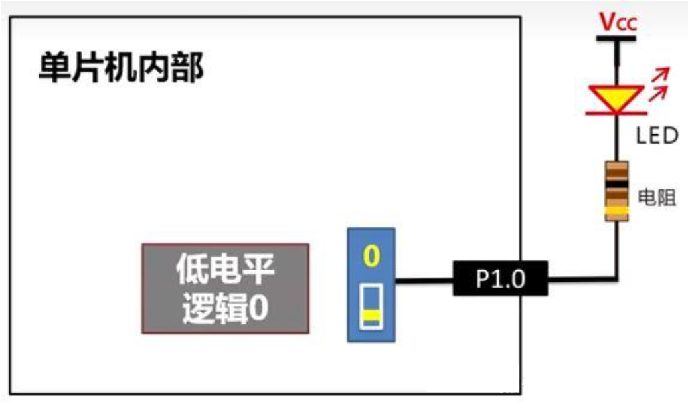

<!DOCTYPE html>
<html lang="en">
  <head>
    <meta charset="utf-8" />
    <meta name="viewport" content="width=device-width, initial-scale=1.0, maximum-scale=1.0, user-scalable=no" />

    <title></title>
    <link rel="stylesheet" href="dist/reveal.css" />
    <link rel="stylesheet" href="dist/theme/simple.css" id="theme" />
    <link rel="stylesheet" href="plugin/highlight/zenburn.css" />
	<link rel="stylesheet" href="css/layout.css" />
	<link rel="stylesheet" href="plugin/customcontrols/style.css">


    <script defer src="dist/fontawesome/all.min.js"></script>

	<script type="text/javascript">
		var forgetPop = true;
		function onPopState(event) {
			if(forgetPop){
				forgetPop = false;
			} else {
				parent.postMessage(event.target.location.href, "app://obsidian.md");
			}
        }
		window.onpopstate = onPopState;
		window.onmessage = event => {
			if(event.data == "reload"){
				window.document.location.reload();
			}
			forgetPop = true;
		}

		function fitElements(){
			const itemsToFit = document.getElementsByClassName('fitText');
			for (const item in itemsToFit) {
				if (Object.hasOwnProperty.call(itemsToFit, item)) {
					var element = itemsToFit[item];
					fitElement(element,1, 1000);
					element.classList.remove('fitText');
				}
			}
		}

		function fitElement(element, start, end){

			let size = (end + start) / 2;
			element.style.fontSize = `${size}px`;

			if(Math.abs(start - end) < 1){
				while(element.scrollHeight > element.offsetHeight){
					size--;
					element.style.fontSize = `${size}px`;
				}
				return;
			}

			if(element.scrollHeight > element.offsetHeight){
				fitElement(element, start, size);
			} else {
				fitElement(element, size, end);
			}		
		}


		document.onreadystatechange = () => {
			fitElements();
			if (document.readyState === 'complete') {
				if (window.location.href.indexOf("?export") != -1){
					parent.postMessage(event.target.location.href, "app://obsidian.md");
				}
				if (window.location.href.indexOf("print-pdf") != -1){
					let stateCheck = setInterval(() => {
						clearInterval(stateCheck);
						window.print();
					}, 250);
				}
			}
	};


        </script>
  </head>
  <body>
    <div class="reveal">
      <div class="slides"><section ><section data-markdown><script type="text/template"><!-- .slide: class="drop" -->
<div class="" style="position: absolute; left: 0px; top: 0px; height: 1200px; width: 1920px; min-height: 1200px; display: flex; flex-direction: column; align-items: center; justify-content: center" absolute="true">

<div class="stretch-column" style="position: absolute; left: 0%; top: 5%; height: 40%; width: 100%; display: flex; flex-direction: column; align-items: center; justify-content: space-evenly" align="stretch">


</div>

<div class="stretch-column" style="font-size: 20px; position: absolute; left: 0%; top: 55%; height: 20%; width: 100%; display: flex; flex-direction: column; align-items: center; justify-content: space-evenly" align="stretch">

# 第2章 点亮你的LED
</div>

<div class="" style="position: absolute; left: 10%; top: 70%; height: 20%; width: 80%; display: flex; flex-direction: column; align-items: center; justify-content: center" align="center">

《单片机原理与应用》<br><br>
张建武（zjw261@hfuu.edu.cn）
</div>
</div>

<aside class="notes"><p>同学们，欢迎大家再次回到《单片机原理与应用》的课堂！经过上一节课的学习，相信大家已经对单片机有了初步的认识，也熟悉了我们后续会用到的开发工具。</p>
<p>从今天开始，我们将正式进入第二章的学习。本章的主题非常有趣，叫做“<strong>点亮你的LED</strong>”。</p>
<p>为什么要从LED开始呢？因为LED就像是单片机给我们的第一个“反馈”。当你看到你编写的程序，在硬件上点亮一盏小小的灯时，那种成就感是无法替代的。</p>
<p>所以，让我们一起从最简单的“Hello World”——点亮LED开始，将理论知识转化为实际的成果吧！</p>
<!-- .slide: data-background-image="Timestamps/Semester/2025-2026学年第1学期/2025秋单片机原理与应用/理论课/assets/课件第1章 如何学习单片机/背景图片.png" --></aside></script></section><section data-markdown><script type="text/template"><!-- .slide: class="drop" -->
<div class="" style="position: absolute; left: 0px; top: 0px; height: 1200px; width: 1920px; min-height: 1200px; display: flex; flex-direction: column; align-items: center; justify-content: center" absolute="true">

<div class="has-dark-background" style="font-size: 20px; border-radius: 15px; background-color: #236B8E; padding: 0 20px; box-sizing: border-box; position: absolute; left: 0%; top: 0%; height: 10%; width: 100%; display: flex; flex-direction: column; align-items: flex-start; justify-content: space-evenly" align="left">

## 本次课主要内容
</div>

<div class="" style="line-height: 2.5; font-size: 45px; position: absolute; left: 5%; top: 25%; height: 50%; width: 44%; display: flex; flex-direction: column; align-items: flex-start; justify-content: space-evenly" align="left">

- 2.1. 认识51单片机
- 2.2. 认识LED小灯
- 2.3. 单片机SFR与新建一个keil工程
- 2.4. 编写点亮小灯的程序
</div>

<div class="" style="position: absolute; left: 55%; top: 17%; height: 66%; width: 40%; display: flex; flex-direction: column; align-items: center; justify-content: center" align="center">


</div>

<div class="has-light-background" style="border-radius: 15px; background-color: #e9e9e9; position: absolute; left: 0%; top: 85%; height: 10%; width: 100%; display: flex; flex-direction: column; align-items: center; justify-content: center" >
</div>
<div class="" style="line-height: 1.8; position: absolute; left: 0%; top: 85%; height: 10%; width: 100%; display: flex; flex-direction: column; align-items: center; justify-content: center" align="center">

2025年秋《单片机原理与应用》
</div>
</div>

<aside class="notes"><p>本节课我们将深入学习单片机的核心概念，并通过一个实践项目将理论知识转化为实际成果。</p>
<p>本次课程主要包括四个部分：</p>
<p>首先，我们将<strong>认识51单片机</strong>。我们将探讨其基本结构和工作原理，为后续的学习打下坚实的基础。</p>
<p>接着，我们将<strong>认识LED小灯</strong>。作为最常见的电子元件之一，LED将成为我们程序运行效果的直观展示。</p>
<p>然后，我们将学习两个重要环节：一是<strong>单片机的特殊功能寄存器（SFR）</strong>，它是控制单片机各项功能的核心；二是<strong>新建一个Keil工程</strong>，这是我们编写和管理代码的起点。</p>
<p>最后，我们将<strong>编写程序来点亮LED小灯</strong>。通过这个项目，我们会将前面所学的知识点串联起来，亲手实现从代码到硬件控制的完整过程。</p>
<p>请大家准备好，让我们一起进入本节课的学习。</p>
<!-- .slide: data-background-image="Timestamps/Semester/2025-2026学年第1学期/2025秋单片机原理与应用/理论课/assets/课件第1章 如何学习单片机/背景图片.png" --></aside></script></section></section><section ><section data-markdown><script type="text/template"><!-- .slide: class="drop" -->
<div class="" style="position: absolute; left: 0px; top: 0px; height: 1200px; width: 1920px; min-height: 1200px; display: flex; flex-direction: column; align-items: center; justify-content: center" absolute="true">

<div class="has-dark-background" style="font-size: 20px; border-radius: 15px; background-color: #236B8E; padding: 0 20px; box-sizing: border-box; position: absolute; left: 0%; top: 0%; height: 10%; width: 100%; display: flex; flex-direction: column; align-items: flex-start; justify-content: space-evenly" align="left">

## 2.1. 认识51单片机：三大资源
</div>
<div class="" style="position: absolute; left: 5%; top: 17%; height: 66%; width: 40%; display: flex; flex-direction: column; align-items: center; justify-content: center" align="center">
 


</div>

<div class="" style="line-height: 2; position: absolute; left: 50%; top: 25%; height: 50%; width: 50%; display: flex; flex-direction: column; align-items: center; justify-content: center" align="center">

- **程序存储器（ROM）：** 存储程序，断电不丢失。
- **数据存储器（RAM）：** 存储数据，断电即丢失。
- **特殊功能寄存器（SFR）：** 控制单片机功能。
</div>

<div class="has-light-background" style="border-radius: 15px; background-color: #e9e9e9; position: absolute; left: 0%; top: 85%; height: 10%; width: 100%; display: flex; flex-direction: column; align-items: center; justify-content: center" >
</div>
<div class="" style="line-height: 1.8; position: absolute; left: 0%; top: 85%; height: 10%; width: 100%; display: flex; flex-direction: column; align-items: center; justify-content: center" align="center">


</div>
</div>

<aside class="notes"><p>我们前面提到，单片机是一个“微型计算机系统”，既然是计算机，它就必须具备基本的存储能力。今天，我们就把单片机内部最重要的三大存储资源一次性讲清楚。</p>
<p><strong>首先，是程序存储器，也就是ROM。</strong> 它就像我们电脑的硬盘，负责永久保存我们编写的程序代码。它有一个非常关键的特性：<strong>断电后，存储的内容不会丢失。</strong> 这正是单片机设备在断电后，程序依然能保持下来的原因。</p>
<p><strong>其次，是数据存储器，也就是RAM。</strong> 它更像是我们电脑的内存条，用来存储程序运行过程中产生的临时数据，比如一些中间变量。RAM的特点正好和ROM相反：<strong>一旦断电，里面的数据就会全部丢失。</strong></p>
<p><strong>最后，也是最特别的一个，就是特殊功能寄存器，简称SFR。</strong> 它们不是用来存储我们普通的程序或数据，而是单片机内部的“控制中心”。我们可以通过对SFR进行读写操作，来控制单片机的各种功能模块，比如控制引脚是输出还是输入、开启定时器等等。可以把它们想象成一个个的<strong>“开关”或“配置项”</strong>，通过编程来控制硬件的行为。</p>
<p>这三类资源相互配合，共同构成了单片机运行的基础。</p>
<!-- .slide: data-background-image="Timestamps/Semester/2025-2026学年第1学期/2025秋单片机原理与应用/理论课/assets/课件第1章 如何学习单片机/背景图片.png" --></aside></script></section><section data-markdown><script type="text/template"><!-- .slide: class="drop" -->
<div class="" style="position: absolute; left: 0px; top: 0px; height: 1200px; width: 1920px; min-height: 1200px; display: flex; flex-direction: column; align-items: center; justify-content: center" absolute="true">

<div class="has-dark-background" style="font-size: 20px; border-radius: 15px; background-color: #236B8E; padding: 0 20px; box-sizing: border-box; position: absolute; left: 0%; top: 0%; height: 10%; width: 100%; display: flex; flex-direction: column; align-items: flex-start; justify-content: space-evenly" align="left">

## 2.1. 认识51单片机：51系列
</div>

<div class="" style="position: absolute; left: 0%; top: 17%; height: 55%; width: 50%; display: flex; flex-direction: column; align-items: center; justify-content: center" align="center">
 


</div>

<div class="" style="line-height: 1.8; position: absolute; left: 48%; top: 20%; height: 50%; width: 52%; display: flex; flex-direction: column; align-items: center; justify-content: center" align="center">

- **51单片机：** 基于英特尔**MCS-51**架构的系列芯片。
- **型号差异：** 主要体现在**内部资源**大小。
- **STC89C52RC为例：**
    - 8KB Flash（程序存储）
    - 512字节RAM（数据存储）
</div>

<div class="has-light-background" style="border-radius: 15px; background-color: #e9e9e9; position: absolute; left: 0%; top: 85%; height: 10%; width: 100%; display: flex; flex-direction: column; align-items: center; justify-content: center" >
</div>
<div class="" style="line-height: 1.8; position: absolute; left: 0%; top: 85%; height: 10%; width: 100%; display: flex; flex-direction: column; align-items: center; justify-content: center" align="center">


</div>
</div>

<aside class="notes"><p>同学们，我们课程所使用的<strong>51单片机</strong>，并不是某一个特定的型号，而是一系列单片机的统称。</p>
<p>它的起源可以追溯到英特尔公司开发的<strong>MCS-51</strong>体系结构。由于这个架构非常经典和成功，后来许多半导体厂商都在此基础上开发了自己的兼容产品，所以市面上才有了各种各样的51单片机。</p>
<p>即使是同一个厂家，也会有不同的51单片机型号。例如，我们课程中使用的<strong>国产宏晶STC89C52RC</strong>，同系列还有STC89C58等等。它们的主要区别，就在于<strong>内部资源</strong>的大小和配置。</p>
<p>以我们手上的<strong>STC89C52RC</strong>为例，它的型号就包含了关键信息：</p>
<ul>
<li><strong>8KB的Flash存储空间</strong>：这意味着它能够存储容量高达8KB的程序代码。</li>
<li><strong>512字节的RAM存储空间</strong>：这意味着它拥有512字节的临时数据存储空间。</li>
</ul>
<p>这些数字直接决定了单片机可以执行多复杂的程序，以及处理多少数据。因此，理解单片机的型号，其实就是在了解它的能力边界。</p>
<!-- .slide: data-background-image="Timestamps/Semester/2025-2026学年第1学期/2025秋单片机原理与应用/理论课/assets/课件第1章 如何学习单片机/背景图片.png" --></aside></script></section><section data-markdown><script type="text/template"><!-- .slide: class="drop" -->
<div class="" style="position: absolute; left: 0px; top: 0px; height: 1200px; width: 1920px; min-height: 1200px; display: flex; flex-direction: column; align-items: center; justify-content: center" absolute="true">

<div class="has-dark-background" style="font-size: 20px; border-radius: 15px; background-color: #236B8E; padding: 0 20px; box-sizing: border-box; position: absolute; left: 0%; top: 0%; height: 10%; width: 100%; display: flex; flex-direction: column; align-items: flex-start; justify-content: space-evenly" align="left">

## 2.1. 认识51单片机：最小系统
</div>

<div class="" style="position: absolute; left: 2%; top: 12%; height: 65%; width: 40%; display: flex; flex-direction: column; align-items: center; justify-content: center" align="center">
 


</div>

<div class="" style="line-height: 1.8; position: absolute; left: 45%; top: 18%; height: 55%; width: 52%; display: flex; flex-direction: column; align-items: center; justify-content: center" align="center">

- **概念：** 保证单片机正常工作所需的最低限度电路。
- **三要素：**
    - **电源：** 提供工作电力。
    - **晶振：** 提供时钟信号。
    - **复位：** 使单片机重启。 
- **注意：** LED、按键等**外设**不属于最小系统。
</div>

<div class="has-light-background" style="border-radius: 15px; background-color: #e9e9e9; position: absolute; left: 0%; top: 85%; height: 10%; width: 100%; display: flex; flex-direction: column; align-items: center; justify-content: center" >
</div>
<div class="" style="line-height: 1.8; position: absolute; left: 0%; top: 85%; height: 10%; width: 100%; display: flex; flex-direction: column; align-items: center; justify-content: center" align="center">

问：只有单片机主芯片和电源电路是正常的，但没有晶振电路，能正常执行烧录进去的程序吗？
</div>
</div>

<aside class="notes"><p>同学们，我们已经了解了单片机内部的资源，但要让这颗芯片真正“活”起来，还需要一些外部电路的配合。这些必不可少的电路，我们称之为<strong>单片机最小系统</strong>，它也被形象地称为“单片机三要素”。</p>
<p>最小系统指的是，让单片机能够正常工作所必需的最低限度电路。它包括三个核心部分：</p>
<p><strong>1. 电源电路：</strong> 就像人体需要能量一样，单片机也需要稳定的电源来驱动。电源电路为芯片提供所需的工作电压。</p>
<p><strong>2. 晶振电路：</strong> 晶振是单片机的“心脏”，它产生周期性的脉冲信号，为单片机内部的所有操作提供统一的时钟节拍。没有晶振，单片机就无法执行任何指令。</p>
<p><strong>3. 复位电路：</strong> 复位电路的作用是让单片机回到初始状态，准备开始执行程序。这就像我们电脑的重启按钮，可以清除所有当前状态，让程序从头开始运行。</p>
<p>因此，只要具备了单片机主芯片、电源、晶振和复位电路，整个单片机最小系统就能正常工作，并开始执行我们烧录进去的程序。</p>
<p>值得注意的是，像LED小灯、数码管、按键等，这些都属于<strong>外设</strong>，它们是在最小系统正常运行的基础上，实现特定功能的扩展，并不包含在最小系统的范畴内。</p>
<p>最小系统的核心特点是，它确保单片机本身能够正常“启动”并执行程序，是整个单片机控制系统的根基。</p>
<p>问大家一个小问题</p>
<p>我们已经了解了单片机最小系统的“三要素”。那么，如果你的单片机开发板上，只有单片机主芯片和电源电路是正常的，但没有晶振电路，它还能正常执行你烧录进去的程序吗？为什么？</p>
<p>答案：是不能。因为晶振电路是单片机的“心脏”，它产生<strong>时钟信号</strong>。单片机内部的所有操作，包括读取指令、执行指令、数据传输等，都需要依赖这个时钟信号来提供<strong>同步和时序</strong>。没有时钟信号，单片机就无法按照正确的节拍工作，就像一支乐队没有指挥，所有的乐器都无法同步演奏一样。</p>
<p>因此，即使有电源，单片机也无法执行任何程序。</p>
<!-- .slide: data-background-image="Timestamps/Semester/2025-2026学年第1学期/2025秋单片机原理与应用/理论课/assets/课件第1章 如何学习单片机/背景图片.png" --></aside></script></section><section data-markdown><script type="text/template"><!-- .slide: class="drop" -->
<div class="" style="position: absolute; left: 0px; top: 0px; height: 1200px; width: 1920px; min-height: 1200px; display: flex; flex-direction: column; align-items: center; justify-content: center" absolute="true">

<div class="has-dark-background" style="font-size: 20px; border-radius: 15px; background-color: #236B8E; padding: 0 20px; box-sizing: border-box; position: absolute; left: 0%; top: 0%; height: 10%; width: 100%; display: flex; flex-direction: column; align-items: flex-start; justify-content: space-evenly" align="left">

## 2.1. 认识51单片机：电路图阅读技巧
</div>

<div class="" style="position: absolute; left: 0%; top: 12%; height: 70%; width: 52%; display: flex; flex-direction: column; align-items: center; justify-content: center" align="center">
 


</div>

<div class="" style="line-height: 1.8; position: absolute; left: 50%; top: 18%; height: 60%; width: 50%; display: flex; flex-direction: column; align-items: center; justify-content: center" align="center">

- **原理图引脚 ≠ 实际引脚**
    - **目的：** 原理图为逻辑清晰，将相关功能引脚集中排列。
    - **注意：** 不代表芯片的物理引脚位置。
- **网络标号**
    - **作用：** 简化复杂电路图，避免连接线杂乱。
    - **规则：** 相同标号（如`RST`）的导线，在电路中是**电气相连**的。
</div>

<div class="has-light-background" style="border-radius: 15px; background-color: #e9e9e9; position: absolute; left: 0%; top: 85%; height: 10%; width: 100%; display: flex; flex-direction: column; align-items: center; justify-content: center" >
</div>
<div class="" style="line-height: 1.8; position: absolute; left: 0%; top: 85%; height: 10%; width: 100%; display: flex; flex-direction: column; align-items: center; justify-content: center" align="center">

如果你在电路图上看到两个没有直接连线的元件，但都标有相同的网络标号，这代表了什么？
</div>
</div>

<aside class="notes"><p>在正式看单片机最小系统的电路图之前，有几个基础知识点必须先搞懂。这能帮助你快速读懂复杂的电路图，而不是被它搞得一头雾水。</p>
<ol>
<li>原理图引脚 vs. 实际引脚**</li>
</ol>
<p>首先，要区分<strong>原理图引脚</strong>和<strong>实际芯片引脚</strong>的区别。</p>
<p>在原理图里，为了让你更好地理解电路，设计师通常会把功能相近的引脚画在一起。例如，<strong>P1 口的引脚</strong>，虽然在芯片上可能分布在不同的物理位置，但原理图上会把它们集中放在一起，并按照 P1.0、P1.1 的顺序排列。</p>
<p>这就像一张地图，它会把所有医院的标记集中放在一个区域，让你一目了然，但实际上这些医院可能分布在城市的各个角落。所以，记住：<strong>原理图是为了功能和逻辑清晰，不代表芯片的物理布局。</strong></p>
<ol start="2">
<li>网络标号</li>
</ol>
<p>其次，是<strong>网络标号</strong>。</p>
<p>在复杂的电路图中，我们不可能把所有连接线都画得清清楚楚，那样会非常杂乱。这时，设计师就会使用<strong>网络标号</strong>来简化。</p>
<p>网络标号就像一个特殊的标签。如果两根线上都有相同的网络标号（例如 <strong>RST</strong> 或 <strong>ADDR0</strong>），就意味着它们在电路中是<strong>电气连接</strong>在一起的。你看到复位电路上的RST标号，和单片机引脚上的RST标号，就应该立刻明白，它们在实际电路中是相连的。</p>
<p>通过这两个小技巧，你就能像专业人士一样，快速读懂任何单片机电路图。</p>
<p>那么，如果你在电路图上看到两个没有直接连线的元件，但它们的引脚上都标有相同的网络标号，这代表了什么？</p>
<p>对。代表它们在实际电路中是<strong>电气连接</strong>在一起的。</p>
<!-- .slide: data-background-image="Timestamps/Semester/2025-2026学年第1学期/2025秋单片机原理与应用/理论课/assets/课件第1章 如何学习单片机/背景图片.png" --></aside></script></section><section data-markdown><script type="text/template"><!-- .slide: class="drop" -->
<div class="" style="position: absolute; left: 0px; top: 0px; height: 1200px; width: 1920px; min-height: 1200px; display: flex; flex-direction: column; align-items: center; justify-content: center" absolute="true">

<div class="has-dark-background" style="font-size: 20px; border-radius: 15px; background-color: #236B8E; padding: 0 20px; box-sizing: border-box; position: absolute; left: 0%; top: 0%; height: 10%; width: 100%; display: flex; flex-direction: column; align-items: flex-start; justify-content: space-evenly" align="left">

## 2.1. 认识51单片机：封装类型及引脚定义
</div>

<div class="" style="position: absolute; left: 0%; top: 15%; height: 65%; width: 60%; display: flex; flex-direction: column; align-items: center; justify-content: center" align="center">
 


</div>

<div class="" style="line-height: 1.8; position: absolute; left: 60%; top: 18%; height: 60%; width: 40%; display: flex; flex-direction: column; align-items: center; justify-content: center" align="center">

- **DIP-40（双列直插封装）**
    - **特点：** 体积大，引脚分列两侧。
    - **应用：** 早期开发板、教学。
    - **引脚识别：** 左上角第一引脚，逆时针排序。
- **QFP（扁平贴片封装）**
    - **特点：** 体积小，引脚环绕。
    - **应用：** 现代产品开发（主流）。
    - **引脚识别：** 芯片上的圆点或凹点标记为第一引脚，逆时针排序。
</div>

<div class="has-light-background" style="border-radius: 15px; background-color: #e9e9e9; position: absolute; left: 0%; top: 85%; height: 10%; width: 100%; display: flex; flex-direction: column; align-items: center; justify-content: center" >
</div>
<div class="" style="line-height: 1.8; position: absolute; left: 0%; top: 85%; height: 10%; width: 100%; display: flex; flex-direction: column; align-items: center; justify-content: center" align="center">

问：DIP封装当前存在的意义是什么？
</div>
</div>

<aside class="notes"><p>我们已经了解了单片机内部的资源和最小系统，现在，让我们来看看单片机芯片本身的样子。在市面上，STC89C52单片机有两种最常见的封装形式。</p>
<p><strong>1. 双列直插封装（DIP-40）</strong></p>
<p>这种封装的芯片，大家在我们的开发板上应该都见过。它的特点是体积较大，两侧各有两排引脚，方便我们直接插到插座上，通常用于早期的教学或一些特殊应用。</p>
<p>它的引脚排列是固定的：从左上角的第1引脚开始，沿着逆时针方向，依次排列到第40引脚。</p>
<p> <strong>2. 扁平贴片封装（QFP）</strong></p>
<p>另一种常见的封装是扁平贴片封装，简称<strong>QFP</strong>。这种芯片体积非常小巧，通常直接焊接在电路板上。在芯片的正面，会有一个小圆圈或者一个凹点，这个标记就是第一引脚的位置。引脚的排列方式和DIP封装一样，也是从第1引脚开始，沿着逆时针方向依次排列。</p>
<p>在真正的产品开发中，绝大多数情况下都会优先选择这种<strong>贴片封装</strong>。因为它们体积更小，便于电路板的布线，而且大规模生产时焊接成本也更低。</p>
<p>了解这两种封装，能帮助我们更好地识别和使用不同的单片机。</p>
<p>问：DIP封装当前存在的意义是什么？</p>
<p>DIP封装存在的意义主要体现在以下几个方面：</p>
<ul>
<li><strong>教学与实验：</strong> 这是DIP封装最重要的应用场景。在学习单片机或电子电路时，DIP封装的芯片可以直接插在<strong>面包板</strong>上，无需焊接，非常方便。学生可以轻松搭建和修改电路，这对于初学者快速入门和动手实践至关重要。</li>
<li><strong>调试与测试：</strong> 在开发原型产品时，工程师常常需要频繁地更换或烧录芯片。DIP封装配合插座，可以很方便地进行插拔，避免了每次都重新焊接的麻烦，大大提高了调试效率。</li>
<li><strong>维修和更换：</strong> 在一些需要高可靠性或易于维护的设备中，DIP封装的芯片可以被用户轻松更换。例如，某些老式工控设备或测试仪器的核心芯片，DIP封装可以让维修人员快速替换故障元件，而不是更换整个电路板。</li>
</ul>
<p>总的来说，DIP封装的优点在于它的<strong>方便性</strong>和<strong>可重复使用性</strong>，这使得它在教学、原型设计和维护领域依然具有不可替代的价值。</p>
<!-- .slide: data-background-image="Timestamps/Semester/2025-2026学年第1学期/2025秋单片机原理与应用/理论课/assets/课件第1章 如何学习单片机/背景图片.png" --></aside></script></section><section data-markdown><script type="text/template"><!-- .slide: class="drop" -->
<div class="" style="position: absolute; left: 0px; top: 0px; height: 1200px; width: 1920px; min-height: 1200px; display: flex; flex-direction: column; align-items: center; justify-content: center" absolute="true">

<div class="has-dark-background" style="font-size: 20px; border-radius: 15px; background-color: #236B8E; padding: 0 20px; box-sizing: border-box; position: absolute; left: 0%; top: 0%; height: 10%; width: 100%; display: flex; flex-direction: column; align-items: flex-start; justify-content: space-evenly" align="left">

## 2.1. 认识51单片机：电源
</div>

<div class="" style="position: absolute; left: 5%; top: 13%; height: 65%; width: 45%; display: flex; flex-direction: column; align-items: center; justify-content: center" align="center">
 


</div>

<div class="" style="line-height: 1.8; position: absolute; left: 45%; top: 15%; height: 60%; width: 50%; display: flex; flex-direction: column; align-items: center; justify-content: center" align="center">

- **引脚：**
    - **VCC** (38脚)：接 **+5V**。
    - **GND** (16脚)：接负极。
- **作用：**
    - 提供稳定工作电力。
- **注意：**
    - 通常并联**电容**用于滤波。
</div>

<div class="has-light-background" style="border-radius: 15px; background-color: #e9e9e9; position: absolute; left: 0%; top: 85%; height: 10%; width: 100%; display: flex; flex-direction: column; align-items: center; justify-content: center" >
</div>
<div class="" style="line-height: 1.8; position: absolute; left: 0%; top: 85%; height: 10%; width: 100%; display: flex; flex-direction: column; align-items: center; justify-content: center" align="center">

问：为什么说电源引脚旁的电容就像一个“蓄水池”？
</div>
</div>

<aside class="notes"><p>我们已经讲了单片机最小系统的三要素，现在让我们具体看看它们在芯片上的引脚上是如何体现的。首先是<strong>电源</strong>，它是单片机正常工作的能量基础。</p>
<p>在我们的STC89C52单片机上，有两个核心的电源引脚：<strong>VCC</strong>和<strong>GND</strong>。</p>
<ul>
<li><p><strong>VCC引脚（38脚）</strong>：负责接入正极电源，通常是<strong>5伏的直流电</strong>。</p>
</li>
<li><p><strong>GND引脚（20脚）</strong>：相当于电源的负极，提供了电路的公共参考点。</p>
</li>
</ul>
<p>在实际的电路设计中，我们通常会在电源引脚旁边<strong>并联一个电容</strong>。这个电容的作用就像一个小型蓄水池，可以过滤掉电源中的杂波，提供更稳定、更纯净的电压，确保单片机能够在一个良好的环境中稳定运行。</p>
<p>记住，<strong>电源是单片机正常工作和执行程序的前提</strong>。没有稳定可靠的供电，任何功能都无法实现。</p>
<p><strong>问题：</strong> 为什么说电源引脚旁的电容就像一个“蓄水池”？</p>
<p><strong>回答：</strong> 电容就像蓄水池一样，可以储存少量的电荷。当电源电压出现瞬间波动或下降时，电容会立即释放储存的电荷，填补电压的“凹陷”，从而保证流向单片机的电压始终保持平稳，不受外界干扰。</p>
<!-- .slide: data-background-image="Timestamps/Semester/2025-2026学年第1学期/2025秋单片机原理与应用/理论课/assets/课件第1章 如何学习单片机/背景图片.png" --></aside></script></section><section data-markdown><script type="text/template"><!-- .slide: class="drop" -->
<div class="" style="position: absolute; left: 0px; top: 0px; height: 1200px; width: 1920px; min-height: 1200px; display: flex; flex-direction: column; align-items: center; justify-content: center" absolute="true">

<div class="has-dark-background" style="font-size: 20px; border-radius: 15px; background-color: #236B8E; padding: 0 20px; box-sizing: border-box; position: absolute; left: 0%; top: 0%; height: 10%; width: 100%; display: flex; flex-direction: column; align-items: flex-start; justify-content: space-evenly" align="left">

## 2.1. 认识51单片机：晶振
</div>

<div class="" style="position: absolute; left: 0%; top: 15%; height: 65%; width: 50%; display: flex; flex-direction: column; align-items: center; justify-content: center" align="center">
 


</div>

<div class="" style="line-height: 1.8; position: absolute; left: 48%; top: 16%; height: 60%; width: 50%; display: flex; flex-direction: column; align-items: center; justify-content: center" align="center">

- **作用：** 提供稳定的**时钟信号**，是单片机的“心脏”。
- **引脚：** 通常连接到14和15脚。
- **功能：** 所有操作都依赖时钟信号提供的统一节拍
- **注意：** 晶振通常搭配**两个电容**使用，以确保频率稳定。
</div>

<div class="has-light-background" style="border-radius: 15px; background-color: #e9e9e9; position: absolute; left: 0%; top: 85%; height: 10%; width: 100%; display: flex; flex-direction: column; align-items: center; justify-content: center" >
</div>
<div class="" style="line-height: 1.8; position: absolute; left: 0%; top: 85%; height: 10%; width: 100%; display: flex; flex-direction: column; align-items: center; justify-content: center" align="center">

问：如果把单片机比作一支正在演奏的乐队，那么晶振在其中扮演了什么角色？
</div>
</div>

<aside class="notes"><p>我们已经讲了单片机的电源，它提供了能量。但是，光有能量还不够，单片机还需要一个统一的“节奏”才能正常工作。这个节奏的来源，就是我们今天要讲的第二个要素——<strong>晶振</strong>。</p>
<p>晶振，通常连接在芯片的<strong>14脚和15脚</strong>上，它就是单片机的“心脏”。它的作用是提供一个稳定的<strong>时钟信号</strong>，这个信号就像军队里指挥官的口号或鼓点，让单片机内部的所有操作都能按照一个特定的、统一的节拍进行。</p>
<p>没有晶振，单片机就无法执行任何指令，因为它不知道什么时候该做什么。</p>
<p>在电路中，晶振通常会搭配两个对地电容一起使用。这两个电容的作用是帮助晶振产生更稳定、更精确的振荡频率，确保单片机的工作节奏不会乱。</p>
<p><strong>问题：</strong> 如果把单片机比作一支正在演奏的乐队，那么晶振在其中扮演了什么角色？</p>
<p><strong>回答：</strong> 晶振就像乐队的<strong>指挥</strong>或者<strong>节拍器</strong>。它提供了统一的节奏和拍子，确保乐队中所有的乐器和乐手都能同步演奏，让整个乐曲流畅地进行。</p>
<!-- .slide: data-background-image="Timestamps/Semester/2025-2026学年第1学期/2025秋单片机原理与应用/理论课/assets/课件第1章 如何学习单片机/背景图片.png" --></aside></script></section><section data-markdown><script type="text/template"><!-- .slide: class="drop" -->
<div class="" style="position: absolute; left: 0px; top: 0px; height: 1200px; width: 1920px; min-height: 1200px; display: flex; flex-direction: column; align-items: center; justify-content: center" absolute="true">

<div class="has-dark-background" style="font-size: 20px; border-radius: 15px; background-color: #236B8E; padding: 0 20px; box-sizing: border-box; position: absolute; left: 0%; top: 0%; height: 10%; width: 100%; display: flex; flex-direction: column; align-items: flex-start; justify-content: space-evenly" align="left">

## 2.1. 认识51单片机：复位电路
</div>

<div class="" style="position: absolute; left: 0%; top: 15%; height: 65%; width: 50%; display: flex; flex-direction: column; align-items: center; justify-content: center" align="center">
 


</div>

<div class="" style="line-height: 1.8; position: absolute; left: 48%; top: 18%; height: 60%; width: 50%; display: flex; flex-direction: column; align-items: center; justify-content: center" align="center">

- **作用：** 使单片机回到**初始状态**，从程序开头重新执行。
- **复位方式：**
    - **上电复位：** 自动复位，最基础的保障。
    - **手动复位：** 按键触发，方便调试。
    - **程序复位：** 自动应对“程序跑飞”或死机。
</div>
<div class="has-light-background" style="border-radius: 15px; background-color: #e9e9e9; position: absolute; left: 0%; top: 85%; height: 10%; width: 100%; display: flex; flex-direction: column; align-items: center; justify-content: center" >
</div>
<div class="" style="line-height: 1.8; position: absolute; left: 0%; top: 85%; height: 10%; width: 100%; display: flex; flex-direction: column; align-items: center; justify-content: center" align="center">

问：在单片机的三种复位方式中，哪一种是在你给开发板通电时，单片机就会自动完成的？
</div>
</div>

<aside class="notes"><p>同学们，我们已经有了能量（电源）和节奏（晶振），但单片机还需要一个“重启”功能，来应对各种突发情况，这就是我们今天要讲的第三个要素——<strong>复位电路</strong>。</p>
<p>复位电路的作用非常关键，它能让单片机在特定情况下，从程序的开头重新开始执行。</p>
<p>举个简单的例子，如果你的单片机程序运行到一半突然断电，再重新上电后，内部的临时数据可能会变得混乱。如果单片机从中断的地方继续运行，程序很可能会出错。这时，复位电路就能像电脑的重启键一样，让单片机回到最初的状态，从第一行代码开始重新执行，确保程序能够稳定运行。</p>
<p>单片机的复位通常有三种方式：</p>
<ul>
<li><p><strong>上电复位：</strong> 这是最常见的复位方式。只要单片机一通电，它就会自动进行一次复位，这是最基础的保障。</p>
</li>
<li><p><strong>手动复位：</strong> 通过按下一个特定的复位按键来实现。现在，这种方式在很多产品中已经很少使用了，但在开发和调试阶段依然很方便。</p>
</li>
<li><p><strong>程序自动复位：</strong> 这种复位方式更智能。当单片机程序因为某些原因“跑飞”或死机时，单片机内部的“看门狗”机制会自动触发复位，使单片机恢复正常运行。</p>
</li>
</ul>
<p><strong>最小系统总结</strong></p>
<p>现在，我们把最小系统的三个要素串联起来：<strong>电源</strong>提供了能量，<strong>晶振</strong>提供了节奏，而<strong>复位</strong>则提供了重启的保障。</p>
<p>只要单片机具备了这三个条件，它就是一个完整且能正常工作的“最小系统”，可以随时下载并运行我们编写的程序。至于我们后面要讲的LED小灯、数码管、按键等，它们都属于<strong>外设</strong>，是在最小系统正常运行的基础上，扩展出来的功能。</p>
<p><strong>问题：</strong></p>
<p>请问，在单片机的三种复位方式中，哪一种是在你给开发板通电时，单片机就会自动完成的？</p>
<p><strong>回答：</strong></p>
<p>上电复位。它是单片机最基本的复位方式，确保每次启动都能从一个已知的、干净的状态开始。</p>
<!-- .slide: data-background-image="Timestamps/Semester/2025-2026学年第1学期/2025秋单片机原理与应用/理论课/assets/课件第1章 如何学习单片机/背景图片.png" --></aside></script></section></section><section ><section data-markdown><script type="text/template"><!-- .slide: class="drop" -->
<div class="" style="position: absolute; left: 0px; top: 0px; height: 1200px; width: 1920px; min-height: 1200px; display: flex; flex-direction: column; align-items: center; justify-content: center" absolute="true">

<div class="has-dark-background" style="font-size: 20px; border-radius: 15px; background-color: #236B8E; padding: 0 20px; box-sizing: border-box; position: absolute; left: 0%; top: 0%; height: 10%; width: 100%; display: flex; flex-direction: column; align-items: flex-start; justify-content: space-evenly" align="left">

## 2.2. 认识LED小灯
</div>

<div class="" style="position: absolute; left: 5%; top: 15%; height: 65%; width: 90%; display: flex; flex-direction: column; align-items: center; justify-content: center" align="center">
 


</div>

<div class="has-light-background" style="border-radius: 15px; background-color: #e9e9e9; position: absolute; left: 0%; top: 85%; height: 10%; width: 100%; display: flex; flex-direction: column; align-items: center; justify-content: center" >
</div>
<div class="" style="line-height: 1.8; position: absolute; left: 0%; top: 85%; height: 10%; width: 100%; display: flex; flex-direction: column; align-items: center; justify-content: center" align="center">

问：LED灯能发光，是利用了我们之前提到的单片机最小系统的哪一个要素的能量？
</div>
</div>

<aside class="notes"><p>同学们，欢迎回到单片机的课程！在正式开始编写我们的第一行代码之前，我们先来认识一个最基本、也最有趣的小伙伴——<strong>LED灯</strong>。</p>
<p>大家看，无论是你的路由器、显示器电源，还是我们手上的这块开发板，那些闪烁的、常亮的小光点，就是我们今天的主角。它们是单片机世界里最常见的“输出”设备，也是我们程序运行效果最直观的反馈。</p>
<p>这节课，我们的目标就是彻底搞懂这个小东西，不仅要让它亮起来，还要学会如何用单片机精准地控制它。让我们一起，点亮通往硬件世界的第一盏灯！</p>
<p><strong>问答环节</strong></p>
<p><strong>问题：</strong> 请大家想一想，LED灯能发光，是利用了我们之前提到的单片机最小系统的哪一个要素的能量？</p>
<p><strong>回答：</strong> LED灯发光是利用了<strong>电源电路</strong>的能量。单片机本身通过控制电源电路的通断，来决定是否给LED灯供电，从而实现对它的控制。</p>
<!-- .slide: data-background-image="Timestamps/Semester/2025-2026学年第1学期/2025秋单片机原理与应用/理论课/assets/课件第1章 如何学习单片机/背景图片.png" --></aside></script></section><section data-markdown><script type="text/template"><!-- .slide: class="drop" -->
<div class="" style="position: absolute; left: 0px; top: 0px; height: 1200px; width: 1920px; min-height: 1200px; display: flex; flex-direction: column; align-items: center; justify-content: center" absolute="true">

<div class="has-dark-background" style="font-size: 20px; border-radius: 15px; background-color: #236B8E; padding: 0 20px; box-sizing: border-box; position: absolute; left: 0%; top: 0%; height: 10%; width: 100%; display: flex; flex-direction: column; align-items: flex-start; justify-content: space-evenly" align="left">

## 2.2. 认识LED小灯
</div>

<div class="" style="position: absolute; left: 0%; top: 15%; height: 66%; width: 40%; display: flex; flex-direction: column; align-items: center; justify-content: center" align="center">
 


</div>

<div class="" style="line-height: 1.8; position: absolute; left: 38%; top: 15%; height: 65%; width: 62%; display: flex; flex-direction: column; align-items: flex-start; justify-content: space-evenly" align="left">

- **本质：** 发光二极管，具有**单向导电性**。
- **发光原理：** 依靠**电流**发光。
- **红色LED关键参数：**
    - **压降：** LED正常工作所需的最小电压，大约在1.8V到2.2V
    - **工作电流**：1mA ~ 20mA
	    - 1-5mA：亮度随电流增加而显著增强。
	    - \>5mA：亮度变化不明显。
	- **安全风险**：>20mA 存在烧毁风险。
- **核心结论：**
    - 使用**限流电阻**保护LED，确保其在安全电流范围内。
</div>

<div class="has-light-background" style="border-radius: 15px; background-color: #e9e9e9; position: absolute; left: 0%; top: 85%; height: 10%; width: 100%; display: flex; flex-direction: column; align-items: center; justify-content: center" >
</div>
<div class="" style="line-height: 1.8; position: absolute; left: 0%; top: 85%; height: 10%; width: 100%; display: flex; flex-direction: column; align-items: center; justify-content: center" align="center">

问：如果我在电路中直接将一个红色LED灯接上5V的电源，但没有串联任何电阻，会发生什么？
</div>
</div>

<aside class="notes"><p>同学们，现在让我们来深入了解一下LED灯的原理。它的学名叫做<strong>发光二极管</strong>。顾名思义，它是一种既能发光，又具有<strong>单向导电性</strong>的电子元件。</p>
<p>你需要记住一个核心概念：<strong>LED是依靠电流来发光的</strong>。</p>
<p>不同的LED，就像不同的人，需要的“食物”和“饭量”也不同。</p>
<ul>
<li><strong>电压要求</strong>：LED要发光，首先需要达到一个最低的“启动电压”，我们称之为<strong>压降</strong>。例如，我们开发板上常用的红色LED，压降大约在1.8V到2.2V之间。而像绿色、蓝色和白色LED，所需的压降会更高，通常在3.0V到3.2V。</li>
<li><strong>电流要求</strong>：更重要的是，我们需要控制流过LED的<strong>电流</strong>。电流就像给LED“喂食”：喂得太少，它可能不亮；喂得太多，则会把它撑坏。例如，常用的红色贴片LED，其安全工作电流范围是1到20毫安。当电流在1到5毫安时，亮度会随着电流增大而明显增强。但如果电流超过20毫安，LED就有被烧毁的风险。</li>
</ul>
<p>所以，为了保护LED，我们必须在电路中采取措施来<strong>限制电流</strong>，确保它在一个安全的工作范围内。</p>
<p><strong>问答环节</strong></p>
<p>问题：</p>
<p>如果我在电路中直接将一个红色LED灯接上5V的电源，但没有串联任何电阻，会发生什么？</p>
<p>回答：</p>
<p>LED灯很可能会在瞬间被烧毁。因为5V电压远高于红色LED的1.8V-2.2V压降，如果没有任何电阻来限制电流，流过LED的电流会瞬间变得非常大，超过其20毫安的最大承受电流，导致LED立即损坏。</p>
<!-- .slide: data-background-image="Timestamps/Semester/2025-2026学年第1学期/2025秋单片机原理与应用/理论课/assets/课件第1章 如何学习单片机/背景图片.png" --></aside></script></section><section data-markdown><script type="text/template"><!-- .slide: class="drop" -->
<div class="" style="position: absolute; left: 0px; top: 0px; height: 1200px; width: 1920px; min-height: 1200px; display: flex; flex-direction: column; align-items: center; justify-content: center" absolute="true">

<div class="has-dark-background" style="font-size: 20px; border-radius: 15px; background-color: #236B8E; padding: 0 20px; box-sizing: border-box; position: absolute; left: 0%; top: 0%; height: 10%; width: 100%; display: flex; flex-direction: column; align-items: flex-start; justify-content: space-evenly" align="left">

## 2.2. 认识LED小灯：正负极
</div>

<div class="" style="position: absolute; left: 0%; top: 15%; height: 65%; width: 50%; display: flex; flex-direction: column; align-items: center; justify-content: center" align="center">
 


</div>

<div class="" style="line-height: 1.8; position: absolute; left: 52%; top: 15%; height: 66%; width: 48%; display: flex; flex-direction: column; align-items: center; justify-content: center" align="center">
 
- **核心概念：**
    - LED 具有**单向导电性**。
    - 电流必须从**正极流入**，从**负极流出**。
- **极性识别：**
    - **贴片 LED：**
        - 有**标记**（如线、缺角）的一端为**负极**。
        - **三角形**或T型尖角为**负极**。
    - **插针 LED：**
        - **长腿**为**正极**。
        - **短腿**为**负极**。
</div>

<div class="has-light-background" style="border-radius: 15px; background-color: #e9e9e9; position: absolute; left: 0%; top: 85%; height: 10%; width: 100%; display: flex; flex-direction: column; align-items: center; justify-content: center" >
</div>
<div class="" style="line-height: 1.8; position: absolute; left: 0%; top: 85%; height: 10%; width: 100%; display: flex; flex-direction: column; align-items: center; justify-content: center" align="center">

问：将一个插针LED的短腿接到了电源正极，长腿接到了单片机引脚上，LED灯会亮吗？
</div>
</div>

<aside class="notes"><p>我们刚才提到了LED是“发光二极管”。这个“二极管”就告诉我们一个非常重要的特性：它有两个电极，分别是<strong>正极</strong>和<strong>负极</strong>。</p>
<p>记住，<strong>LED具有单向导电性</strong>。这意味着，电流必须从正极流入，从负极流出，它才能正常工作并发出光亮。如果接反了，它就会像一道单向门一样，完全不导通，自然也就不会亮了。</p>
<p>那么，我们该如何区分LED的正负极呢？方法很简单，取决于它的封装形式：</p>
<ul>
<li><strong>对于贴片LED</strong>：通常在芯片上会有明显的标记，比如一条线、一个缺角或一个斜面。有标记的那一边就是<strong>负极</strong>。如果背面有三角形或T形图案，那么<strong>尖角</strong>所指的方向也是负极。</li>
<li><strong>对于插针LED</strong>：这是最直观的。记住一个口诀：<strong>“长正短负”</strong>。也就是，引脚比较长的那一端是<strong>正极</strong>，比较短的那一端是<strong>负极</strong>。</li>
</ul>
<p>掌握这个知识点，你就不会在接线时犯低级错误，也能确保你的LED灯能够成功被点亮。</p>
<p><strong>问题：</strong> 请大家想一想，如果我们在一个电路中，将一个插针LED的短腿接到了单片机引脚上，长腿接到了电源的正极上，LED灯会亮吗？为什么？</p>
<p><strong>回答：</strong> LED灯<strong>不会</strong>亮。因为“长正短负”，我们将长腿（正极）接到了电源正极，但将短腿（负极）接到了单片机引脚，而不是电源的负极（地线）。在没有形成完整电流回路的情况下，LED无法导通，自然也就不会发光。</p>
<!-- .slide: data-background-image="Timestamps/Semester/2025-2026学年第1学期/2025秋单片机原理与应用/理论课/assets/课件第1章 如何学习单片机/背景图片.png" --></aside></script></section><section data-markdown><script type="text/template"><!-- .slide: class="drop" -->
<div class="" style="position: absolute; left: 0px; top: 0px; height: 1200px; width: 1920px; min-height: 1200px; display: flex; flex-direction: column; align-items: center; justify-content: center" absolute="true">

<div class="has-dark-background" style="font-size: 20px; border-radius: 15px; background-color: #236B8E; padding: 0 20px; box-sizing: border-box; position: absolute; left: 0%; top: 0%; height: 10%; width: 100%; display: flex; flex-direction: column; align-items: flex-start; justify-content: space-evenly" align="left">

## 2.2. 认识LED小灯：开发板上的LED灯回路
</div>

<div class="" style="position: absolute; left: 0%; top: 15%; height: 65%; width: 68%; display: flex; flex-direction: column; align-items: center; justify-content: center" align="center">
 


</div>

<div class="" style="line-height: 1.8; position: absolute; left: 68%; top: 14%; height: 65%; width: 32%; display: flex; flex-direction: column; align-items: center; justify-content: center" align="center">
 
- **起点：** `+5V` 电源
- **途径：** 
	- LED → 限流电阻
	- 开关 → LED → 限流电阻
- **终点：** 接地（GND），形成完整回路   
</div>

<div class="has-light-background" style="border-radius: 15px; background-color: #e9e9e9; position: absolute; left: 0%; top: 85%; height: 10%; width: 100%; display: flex; flex-direction: column; align-items: center; justify-content: center" >
</div>
<div class="" style="line-height: 1.8; position: absolute; left: 0%; top: 85%; height: 10%; width: 100%; display: flex; flex-direction: column; align-items: center; justify-content: center" align="center">

问：在这两种LED点亮方式中，哪一个需要我们手动操作才能点亮？
</div>
</div>

<aside class="notes"><p>同学们，现在我们结合开发板上的原理图，来深入理解LED点亮电路的工作原理。</p>
<p>请看左侧，我们的<strong>USB接口</strong>从电脑取来了<strong>5V的直流电</strong>，这是整个电路的能量来源。在我们的开发板上，大家会看到有两个LED小灯：</p>
<ul>
<li><p><strong>第一个LED</strong>：它直接与电源相连，只要开发板一通电，它就会自动点亮，作为电源指示灯。</p>
</li>
<li><p><strong>第二个LED</strong>：它需要通过一个<strong>开关</strong>来控制。当你按下开关，电路接通，它才会亮。</p>
</li>
</ul>
<p>无论是哪一种LED，它们在电路中都有一个共同点：电流从电源出来后，都会先经过LED，紧接着再串联一个至关重要的元器件——<strong>限流电阻</strong>，最后才流入地线，构成一个完整的回路。</p>
<p>为什么必须有这个电阻呢？它就像LED的“保护伞”，用来限制流过它的电流，确保LED工作在安全的范围内，防止因电流过大而被烧毁。</p>
<p><strong>问题：</strong> 在这两种LED点亮方式中，哪一个需要我们手动操作才能点亮？
<strong>回答：</strong> 需要我们手动操作才能点亮的是<strong>通过开关控制的LED</strong>。而另一个LED，只要开发板通电，它就会自动点亮。</p>
<!-- .slide: data-background-image="Timestamps/Semester/2025-2026学年第1学期/2025秋单片机原理与应用/理论课/assets/课件第1章 如何学习单片机/背景图片.png" --></aside></script></section><section data-markdown><script type="text/template"><!-- .slide: class="drop" -->
<div class="" style="position: absolute; left: 0px; top: 0px; height: 1200px; width: 1920px; min-height: 1200px; display: flex; flex-direction: column; align-items: center; justify-content: center" absolute="true">

<div class="has-dark-background" style="font-size: 20px; border-radius: 15px; background-color: #236B8E; padding: 0 20px; box-sizing: border-box; position: absolute; left: 0%; top: 0%; height: 10%; width: 100%; display: flex; flex-direction: column; align-items: flex-start; justify-content: space-evenly" align="left">

## 2.2. 认识LED小灯：计算限流电阻
</div>

<div class="" style="position: absolute; left: 0%; top: 15%; height: 65%; width: 50%; display: flex; flex-direction: column; align-items: center; justify-content: center" align="center">
  


</div>

<div class="" style="line-height: 1.8; position: absolute; left: 50%; top: 14%; height: 65%; width: 48%; display: flex; flex-direction: column; align-items: center; justify-content: center" align="center">
 
 - 利用欧姆定律（I=RU​）**控制电流**大小。
- **计算实例：** 当电源5V，LED压降2V，电阻为1kΩ时，电流为 3mA。
- **保护目的：** 将电流控制在 LED 的安全工作范围（1-20mA）内，防止烧毁。
</div>

<div class="has-light-background" style="border-radius: 15px; background-color: #e9e9e9; position: absolute; left: 0%; top: 85%; height: 10%; width: 100%; display: flex; flex-direction: column; align-items: center; justify-content: center" >
</div>
<div class="" style="line-height: 1.8; position: absolute; left: 0%; top: 85%; height: 10%; width: 100%; display: flex; flex-direction: column; align-items: center; justify-content: center" align="center">

问：如果我想让这个红色LED比现在更亮一点，我应该如何调整限流电阻的阻值？
</div>
</div>

<aside class="notes"><p>为什么我们一定要加上这个电阻呢？我们来算一笔账，这正是大家初中物理学过的<strong>欧姆定律</strong>的应用。</p>
<ul>
<li>首先，电源提供<strong>5V</strong>的总电压。</li>
<li>我们的LED自己要“消耗”一部分电压，也就是它的<strong>压降</strong>，大约是<strong>2V</strong>。</li>
<li>那么，根据串联电路的电压分配，剩下的电压都去哪儿了？没错，剩下的<strong>3V</strong>（5V - 2V）的电压，就全部落在了这个限流电阻身上。</li>
</ul>
<p>现在，我们可以利用欧姆定律的公式：I=RU​ （电流 = 电压 / 电阻），来计算流过LED的电流。</p>
<ul>
<li>如果我们在电路中放一个1K欧姆（即1000欧姆）的电阻，那么电流就是：
  I=3V​/1000Ω=0.003A=3mA</li>
</ul>
<p>3毫安！这个数值怎么样？它正好在我们之前说的1到20毫安的安全范围内，既能保证LED有足够的亮度，又绝对安全，不会被烧坏。所以，这个1K欧姆的电阻，就像是为LED精心挑选的“保护神”，不多不少，恰到好处！</p>
<p><strong>问题：</strong></p>
<p>如果我想让这个红色LED比现在更亮一点，在不更换LED和电源的前提下，我应该如何调整限流电阻的阻值？请说明理由。</p>
<p><strong>回答：</strong></p>
<p>为了让LED更亮，我们需要增加流过它的电流。根据欧姆定律 I=RU​，在电压U不变的情况下，如果想增大电流I，就必须<strong>减小电阻R</strong>的阻值。</p>
<p>因此，你应该选择一个阻值<strong>小于1K欧姆</strong>的电阻，例如510欧姆或330欧姆，这样就可以让流过LED的电流变大，从而提升亮度。当然，前提是电流不能超过LED的安全上限20毫安。</p>
<!-- .slide: data-background-image="Timestamps/Semester/2025-2026学年第1学期/2025秋单片机原理与应用/理论课/assets/课件第1章 如何学习单片机/背景图片.png" --></aside></script></section><section data-markdown><script type="text/template"><!-- .slide: class="drop" -->
<div class="" style="position: absolute; left: 0px; top: 0px; height: 1200px; width: 1920px; min-height: 1200px; display: flex; flex-direction: column; align-items: center; justify-content: center" absolute="true">

<div class="has-dark-background" style="font-size: 20px; border-radius: 15px; background-color: #236B8E; padding: 0 20px; box-sizing: border-box; position: absolute; left: 0%; top: 0%; height: 10%; width: 100%; display: flex; flex-direction: column; align-items: flex-start; justify-content: space-evenly" align="left">

## 2.2. 认识LED小灯：程序控制LED灯
</div>

<div class="" style="position: absolute; left: 0%; top: 15%; height: 65%; width: 45%; display: flex; flex-direction: column; align-items: center; justify-content: center" align="center">
 


</div>

<div class="" style="line-height: 1.8; position: absolute; left: 45%; top: 15%; height: 65%; width: 50%; display: flex; flex-direction: column; align-items: center; justify-content: center" align="center">

- **电路改动：**
    - 将LED的阴极连接到单片机引脚（如 `P0.0`）。
- **控制原理：**
    - **熄灭：**
        - `P0.0` 输出**高电平**（`+5V`）。
        - LED两端无电压差，无电流。
    - **点亮：**
        - `P0.0` 输出**低电平**（`0V`）。
        - 形成电压差，电流流过，LED发光。
</div>

<div class="has-light-background" style="border-radius: 15px; background-color: #e9e9e9; position: absolute; left: 0%; top: 85%; height: 10%; width: 100%; display: flex; flex-direction: column; align-items: center; justify-content: center" >
</div>
<div class="" style="line-height: 1.8; position: absolute; left: 0%; top: 85%; height: 10%; width: 100%; display: flex; flex-direction: column; align-items: center; justify-content: center" align="center">

如果LED阳极接单片机引脚上，而阴极直接接地，单片机引脚输出什么电平才能点亮LED？
</div>
</div>

<aside class="notes"><p>前面我们通过手动开关来点亮LED，这只是入门。现在，最激动人心的部分来了！我们是来玩单片机的，要让程序来控制一切，让代码点亮我们的世界！</p>
<p>为了实现这个目标，我们对电路进行一个关键的改动：我们不再直接将LED的负极接到地线，而是将它连接到<strong>单片机的一个引脚上</strong>，比如<strong>P0.0口</strong>。现在，奇迹就要发生了。</p>
<p><strong>1. 让LED熄灭：</strong></p>
<p>我们编写程序，让P0.0引脚输出一个<strong>“高电平”</strong>。什么是高电平？它在我们的5V系统中，就相当于<strong>5V电压</strong>。这时，你会发现一个有趣的现象：LED的阳极接的是5V，而它的阴极（通过P0.0口）接的也是5V。两边的电压一样高，没有电压差，就像一个水池两边水位一样，水流不起来。结果是什么？灯，是<strong>灭的</strong>。</p>
<p><strong>2. 让LED点亮：</strong></p>
<p>现在，我们再次编程，让P0.0引脚输出一个<strong>“低电平”</strong>。低电平就相当于<strong>0V</strong>，也就是直接接地。瞬间，电路打通了！电流从5V电源出发，流过LED，流过限流电阻，最后通过P0.0引脚流入了“大地”。3毫安的电流哗哗流过，LED“啪”的一下，就被我们用代码<strong>点亮了</strong>！</p>
<p>看到了吗？就这么简单！通过给单片机引脚一个<strong>“高”</strong>或<strong>“低”</strong>的信号，我们就实现了对一个物理世界元器件的精确控制。这就是数字电路的魔力，也是我们学习单片机的核心所在！</p>
<p><strong>问题：</strong></p>
<p>如果我将LED的阳极接在单片机的P0.0引脚上，而阴极直接接地，那么我应该让P0.0引脚输出什么电平，才能点亮LED？</p>
<p><strong>回答：</strong></p>
<p>为了点亮LED，你需要让P0.0引脚输出<strong>高电平</strong>。因为LED的阴极已经接地（0V），所以只有当阳极输出高电平（5V），形成电压差，电流才能从阳极流向阴极，点亮LED。</p>
<p> <strong>课程总结与展望</strong></p>
<p>好了，今天的内容就是这些。我们从认识一个最简单的发光二极管开始，学会了如何为它设计保护电路，并最终掌握了用单片机代码控制它亮灭的核心原理。</p>
<p>点亮LED，就像是程序员在硬件世界里输出的第一个“Hello, World!”。希望通过这节课，大家已经感受到了创造和控制的乐趣。</p>
<!-- .slide: data-background-image="Timestamps/Semester/2025-2026学年第1学期/2025秋单片机原理与应用/理论课/assets/课件第1章 如何学习单片机/背景图片.png" --></aside></script></section></section><section ><section data-markdown><script type="text/template"><!-- .slide: class="drop" -->
<div class="" style="position: absolute; left: 0px; top: 0px; height: 1200px; width: 1920px; min-height: 1200px; display: flex; flex-direction: column; align-items: center; justify-content: center" absolute="true">

<div class="has-dark-background" style="font-size: 20px; border-radius: 15px; background-color: #236B8E; padding: 0 20px; box-sizing: border-box; position: absolute; left: 0%; top: 0%; height: 10%; width: 100%; display: flex; flex-direction: column; align-items: flex-start; justify-content: space-evenly" align="left">

## 2.3. 单片机SFR与新建一个keil工程：特殊功能寄存器和位定义
</div>

<div class="" style="line-height: 1.8; position: absolute; left: 2%; top: 15%; height: 60%; width: 40%; display: flex; flex-direction: column; align-items: center; justify-content: center" align="center">
 
```C
// 单片机C语言SFR声明
sfr P0 = 0x80;   // SFR声明
sfr TCON = 0x88;
sbit IT0 = TCON^0;   //位声明
sbit LED = P0^0;
```
</div>

<div class="" style="line-height: 1.8; position: absolute; left: 42%; top: 15%; height: 65%; width: 58%; display: flex; flex-direction: column; align-items: center; justify-content: center" align="center">

- **核心概念：特殊功能寄存器（SFR）**
    - 单片机内部的功能控制模块。
    - 每个SFR都有唯一的内存地址。
- **声明关键字：**
    - **`sfr`：声明字节**
        - **作用：** 用于对该寄存器的**8个位**进行整体操作。
        - **示例：** `sfr P0 = 0x80;`
    - **`sbit`：声明位**
        - **作用：** 实现对特定IO口的精确控制。
        - **示例：** `sbit LED = P0^0;`
</div>

<div class="has-light-background" style="border-radius: 15px; background-color: #e9e9e9; position: absolute; left: 0%; top: 85%; height: 10%; width: 100%; display: flex; flex-direction: column; align-items: center; justify-content: center" >
</div>
<div class="" style="line-height: 1.8; position: absolute; left: 0%; top: 85%; height: 10%; width: 100%; display: flex; flex-direction: column; align-items: center; justify-content: center" align="center">

问：`sfr`声明了P0口，而在程序中直接使用`P0 = 0xFE;`，这行代码会影响P0口的几个IO口？
</div>
</div>

<aside class="notes"><p>各位同学大家好！上一节课，我们学习了LED小灯的发光原理，以及如何通过单片机引脚的高低电平来控制它。今天，我们将正式进入单片机编程的世界，来认识驱动这些硬件的“灵魂”——<strong>C51代码程序</strong>。</p>
<p>首先，我们要认识一个核心概念：<strong>特殊功能寄存器（SFR）</strong>。</p>
<p>在C51编程中，有一个特殊的关键字 <code>sfr</code>，它就是用来声明一个特殊功能寄存器的。例如 <code>sfr P0 = 0x80;</code>。这里的<code>0x80</code>是一个十六进制地址。这是什么意思呢？</p>
<p>我们可以把单片机内部的各种功能模块，想象成住在一个大房子里的一个个小房间。每一个功能模块，比如我们今天要操作的<strong>P0端口</strong>，都有一个独立的、唯一的“房间地址”。我们作为程序员，就是通过这个地址来找到它，然后对它进行配置，让它实现我们想要的功能。<code>sfr</code> 这个关键字，就是告诉编译器：“嗨，我要操作这个特殊房间了，它的地址是这里！”</p>
<p>P0是一个字节的寄存器，它里面一共有8位，每一位都对应着一个独立的IO口，就像8个独立的开关。如果我们只想控制其中一个IO口，比如P0.0，我们就需要用到第二个关键字 <code>sbit</code>。</p>
<p>例如，<code>sbit LED = P0^0;</code> 这行代码，就是用<code>sbit</code>来声明一个<strong>位变量</strong>。它告诉编译器，我给P0.0口起一个更友好的名字叫“LED”。以后，我们就可以直接通过操作<code>LED</code>这个变量，来控制P0.0这一个IO口的状态了。</p>
<p>总结一下，<code>sfr</code>和<code>sbit</code>这两个关键字，就是我们用来对51单片机特殊功能寄存器进行声明的工具：</p>
<ul>
<li><strong><code>sfr</code>声明</strong>一个<strong>字节</strong>，你可以一次性操作该端口的8个IO口。</li>
<li><strong><code>sbit</code>声明</strong>一个<strong>位</strong>，你就可以只操作这8个IO口中的某一个。</li>
</ul>
<p>理解这两个关键字，是掌握51单片机编程的第一步，也是最重要的一步。</p>
<p><strong>问答环节</strong></p>
<p><strong>问题：</strong> 请大家想一想，如果我只用<code>sfr</code>声明了P0口，而在程序中直接使用<code>P0 = 0xFE;</code>这样的语句，这行代码会影响P0口的几个IO口？</p>
<p><strong>回答：</strong> <code>P0 = 0xFE;</code>这行代码会影响P0口的<strong>全部8个IO口</strong>。因为<code>sfr</code>声明的是一个字节，<code>0xFE</code>是十六进制数，它的二进制是<code>1111 1110</code>，所以这个操作会一次性将P0.0设置为低电平，而P0.1到P0.7全部设置为高电平。</p>
<!-- .slide: data-background-image="Timestamps/Semester/2025-2026学年第1学期/2025秋单片机原理与应用/理论课/assets/课件第1章 如何学习单片机/背景图片.png" --></aside></script></section><section data-markdown><script type="text/template"><!-- .slide: class="drop" -->
<div class="" style="position: absolute; left: 0px; top: 0px; height: 1200px; width: 1920px; min-height: 1200px; display: flex; flex-direction: column; align-items: center; justify-content: center" absolute="true">

<div class="has-dark-background" style="font-size: 20px; border-radius: 15px; background-color: #236B8E; padding: 0 20px; box-sizing: border-box; position: absolute; left: 0%; top: 0%; height: 10%; width: 100%; display: flex; flex-direction: column; align-items: flex-start; justify-content: space-evenly" align="left">

## 2.3. 单片机SFR与新建一个keil工程：头文件
</div>

<div class="" style="line-height: 1.8; position: absolute; left: 0%; top: 17%; height: 60%; width: 60%; display: flex; flex-direction: column; align-items: center; justify-content: center" align="center">
 


</div>

<div class="" style="line-height: 1.6; position: absolute; left: 60%; top: 15%; height: 65%; width: 40%; display: flex; flex-direction: column; align-items: center; justify-content: center" align="center">

### **编程规范与命名**

- **特殊功能寄存器（SFR）**
    - **命名：** **固定大写**（如`P0`），由头文件预先声明。
    - **依据：** 硬件规范，不能随意更改。
    - **查阅：** 不同单片机需查**数据手册**。
- **用户自定义变量**
    - **命名：** 自行定义（如`LED`），方便记忆。
    - **原则：** 须在程序中保持**前后一致**。
    - **注意：** 不受大小写强制要求。
</div>
<div class="has-light-background" style="border-radius: 15px; background-color: #e9e9e9; position: absolute; left: 0%; top: 85%; height: 10%; width: 100%; display: flex; flex-direction: column; align-items: center; justify-content: center" >
</div>
<div class="" style="line-height: 1.8; position: absolute; left: 0%; top: 85%; height: 10%; width: 100%; display: flex; flex-direction: column; align-items: center; justify-content: center" align="center">

问：特殊功能寄存器P0必须用大写。那么，我们自己定义的变量名LED是否也必须大写？
</div>
</div>

<aside class="notes"><p>同学们，现在我们对 <code>sfr</code> 和 <code>sbit</code> 两个关键字已经有了初步的认识。在实际编写代码时，有一些细节需要特别注意，这关系到你的程序能否顺利编译和运行。</p>
<p>首先，请大家看，在我们的C51代码中，最开始通常会包含一个<strong>头文件</strong>，它就像一本字典，提前定义好了单片机内部各种寄存器的名称和地址。大家要注意，<code>P0</code>本身就是51单片机的一个特殊功能寄存器，它的名字和地址，在这个头文件里已经<strong>进行了严格的声明</strong>。因此，在我们的程序中，如果你要使用 <code>P0</code> 这个寄存器，它的名字<strong>必须是大写P0</strong>，这是硬件规范，不能随意更改。</p>
<p>接下来是关于我们自己定义的变量名，比如 <code>sbit LED = P0^0;</code> 这行代码。这里的 <code>LED</code> 是我们给P0.0口取的一个更形象、更方便记忆的名字。<code>LED</code>这个名字是<strong>我们自己定义的</strong>，你可以把它叫做<code>light</code>，也可以叫做<code>D1</code>，这都完全没有问题。但有一点必须遵守：你给它起了什么名字，就必须在整个程序中都使用这个名字，保持前后一致。</p>
<p>最后，我想强调一点：我们现在学习的这些特殊功能寄存器，是针对经典的51单片机。但是，市面上的单片机型号千差万别，不同类型的单片机，其特殊功能寄存器的名称和地址不完全一样。如果你以后要使用其他型号的单片机，最好的方法是去查阅它对应的<strong>数据手册（Datasheet）</strong>，手册里会详细列出所有特殊功能寄存器的名称、地址和功能。</p>
<p><strong>问答环节</strong></p>
<p>问题：</p>
<p>我们刚刚讲到，特殊功能寄存器P0必须用大写。那么，我们自己定义的变量名LED是否也必须大写？为什么？</p>
<p>回答：</p>
<p>我们自己定义的变量名LED不必须大写。这是因为像P0这种由单片机硬件决定的特殊功能寄存器，它的名字是固定的，必须严格按照头文件或数据手册的规范来写。而LED是我们为了方便理解，自己给P0^0这个位变量起的名字，只要我们自己在使用时保持一致性即可，没有大小写强制要求。</p>
<!-- .slide: data-background-image="Timestamps/Semester/2025-2026学年第1学期/2025秋单片机原理与应用/理论课/assets/课件第1章 如何学习单片机/背景图片.png" --></aside></script></section><section data-markdown><script type="text/template"><!-- .slide: class="drop" -->
<div class="" style="position: absolute; left: 0px; top: 0px; height: 1200px; width: 1920px; min-height: 1200px; display: flex; flex-direction: column; align-items: center; justify-content: center" absolute="true">

<div class="has-dark-background" style="font-size: 20px; border-radius: 15px; background-color: #236B8E; padding: 0 20px; box-sizing: border-box; position: absolute; left: 0%; top: 0%; height: 10%; width: 100%; display: flex; flex-direction: column; align-items: flex-start; justify-content: space-evenly" align="left">

## 2.3. 单片机SFR与新建一个keil工程：什么是寄存器？
</div>

<div class="" style="position: absolute; left: 0%; top: 15%; height: 65%; width: 45%; display: flex; flex-direction: column; align-items: center; justify-content: center" align="center">
 


</div>

<div class="" style="line-height: 1.8; position: absolute; left: 47%; top: 15%; height: 65%; width: 53%; display: flex; flex-direction: column; align-items: flex-start; justify-content: space-evenly" align="left">

- **概念类比：**
    - 寄存器 = 家庭**配电箱**。
    - 每一位（Bit）= 配电箱上的**开关**。
- **状态表示：**
    - 开关**闭合** = **`0`** (低电平)
    - 开关**打开** = **`1`** (高电平)
- **编程本质：**
    - 通过改变寄存器中“开关”的状态（`0`或`1`）。
    - 实现对单片机外部硬件的精确控制。
</div>

<div class="has-light-background" style="border-radius: 15px; background-color: #e9e9e9; position: absolute; left: 0%; top: 85%; height: 10%; width: 100%; display: flex; flex-direction: column; align-items: center; justify-content: center" >
</div>
<div class="" style="line-height: 1.8; position: absolute; left: 0%; top: 85%; height: 10%; width: 100%; display: flex; flex-direction: column; align-items: center; justify-content: center" align="center">

问：一个寄存器有8个“开关”（位），并且值是`0x0F`，请问，这8个开关的状态分别是开还是关？
</div>
</div>

<aside class="notes"><p>同学们，我们刚才一直在说“寄存器”，那么，这个听起来有点抽象的概念，到底是什么呢？</p>
<p>我们可以把它类比于我们家里的<strong>配电箱</strong>。</p>
<p>大家想一想，家里的配电箱上有很多开关，每一个开关都控制着家里的一个电器或一组灯。这些开关只有两种状态：<strong>关</strong>和<strong>开</strong>。</p>
<p><strong>寄存器</strong>的内部，我们也可以把它想象成很多组这样的<strong>开关</strong>。每个开关，也就是我们常说的“位”（bit），也只有两种状态：</p>
<ul>
<li>当开关<strong>闭合</strong>时，它的状态为<strong>0</strong>（低电平）。</li>
<li>当开关<strong>打开</strong>时，它的状态为<strong>1</strong>（高电平）。</li>
</ul>
<p>通过对这些“开关”（也就是寄存器中的位）进行编程控制，我们就能精确地控制单片机的各种功能，比如，让某个IO口输出高电平或低电平，从而点亮或熄灭LED灯。</p>
<p>所以，理解了寄存器，你就理解了单片机编程的本质：<strong>通过控制内部的“开关”，来控制外部的硬件设备。</strong></p>
<p><strong>问题：</strong></p>
<p>如果一个寄存器有8个“开关”（位），并且它的值是<code>0x0F</code>，请问，这8个开关的状态分别是开还是关？</p>
<p><strong>回答：</strong> <code>0x0F</code>是十六进制数，它的二进制形式是<code>0000 1111</code>。</p>
<ul>
<li><code>0</code>代表开关<strong>闭合</strong>。</li>
<li><code>1</code>代表开关<strong>打开</strong>。</li>
</ul>
<p>因此，这个寄存器的8个开关中，从最低位（最右边）开始的4个开关是<strong>打开</strong>的，而剩下的4个开关是<strong>闭合</strong>的。</p>
<!-- .slide: data-background-image="Timestamps/Semester/2025-2026学年第1学期/2025秋单片机原理与应用/理论课/assets/课件第1章 如何学习单片机/背景图片.png" --></aside></script></section><section data-markdown><script type="text/template"><!-- .slide: class="drop" -->
<div class="" style="position: absolute; left: 0px; top: 0px; height: 1200px; width: 1920px; min-height: 1200px; display: flex; flex-direction: column; align-items: center; justify-content: center" absolute="true">

<div class="has-dark-background" style="font-size: 20px; border-radius: 15px; background-color: #236B8E; padding: 0 20px; box-sizing: border-box; position: absolute; left: 0%; top: 0%; height: 10%; width: 100%; display: flex; flex-direction: column; align-items: flex-start; justify-content: space-evenly" align="left">

## 2.3. 单片机SFR与新建一个keil工程：寄存器分类与功能
</div>

<div class="" style="position: absolute; left: 3%; top: 17%; height: 60%; width: 45%; display: flex; flex-direction: column; align-items: center; justify-content: center" align="center">
 


</div>

<div class="" style="line-height: 1.8; position: absolute; left: 49%; top: 17%; height: 60%; width: 51%; display: flex; flex-direction: column; align-items: center; justify-content: center" align="center">

- **RAM 寄存器**（通用寄存器）：
	- **作用：** **数据存储**（如临时变量）。
	- **特点：** 无特定硬件控制功能。
- **特殊功能寄存器（SFR）**：
	- **作用：** **硬件控制**（如控制IO口、定时器）
	- **特点：** 与外部硬件模块直接相连。
</div>

<div class="has-light-background" style="border-radius: 15px; background-color: #e9e9e9; position: absolute; left: 0%; top: 85%; height: 10%; width: 100%; display: flex; flex-direction: column; align-items: center; justify-content: center" >
</div>
<div class="" style="line-height: 1.8; position: absolute; left: 0%; top: 85%; height: 10%; width: 100%; display: flex; flex-direction: column; align-items: center; justify-content: center" align="center">

问：如果需要临时存储一个计算结果，应该把它存入RAM寄存器，还是特殊功能寄存器（SFR）？
</div>
</div>

<aside class="notes"><p>同学们，我们已经知道寄存器就像单片机内部的“开关”。那么，这些“开关”到底有什么用呢？它们主要有两个核心功能：</p>
<p>第一，<strong>存储数据</strong>。 第二，<strong>控制硬件</strong>的开启和关闭。</p>
<p>为了实现这两个不同的功能，单片机内部的寄存器被分成了不同的类型。</p>
<p>首先，是<strong>RAM寄存器</strong>。在RAM中，大部分都是“自由”的，也就是<strong>通用寄存器</strong>，它们只用于一个目的：<strong>存储数据</strong>。这些寄存器就像我们临时用来存放文件的“抽屉”，你可以把任何数据存进去，但它们本身不具备控制任何硬件的功能。</p>
<p>而另一类，就是我们之前讲过的<strong>特殊功能寄存器（SFR）</strong>。它们非常特别，因为它们与单片机外部的硬件模块（比如我们之前讲的IO口、定时器等）是直接连接在一起的。通过对这些寄存器进行编程，我们就能实现对外部硬件的<strong>直接控制</strong>。比如，通过改变P0寄存器的状态，我们就能点亮或熄灭LED灯。</p>
<p>所以，记住这个关键的区别：RAM寄存器主要负责<strong>数据存储</strong>，而特殊功能寄存器（SFR）则主要负责<strong>硬件控制</strong>。</p>
<p><strong>问题：</strong></p>
<p>如果我需要在一个程序中，临时存储一个计算结果，我应该把它存入RAM寄存器，还是特殊功能寄存器（SFR）？为什么？</p>
<p><strong>回答：</strong> 你应该把它存入<strong>RAM寄存器</strong>。因为RAM寄存器是通用的数据存储区域，专门用来存放程序运行过程中产生的临时数据，而特殊功能寄存器（SFR）是用来控制硬件的，通常不能用于通用数据的存储。</p>
<!-- .slide: data-background-image="Timestamps/Semester/2025-2026学年第1学期/2025秋单片机原理与应用/理论课/assets/课件第1章 如何学习单片机/背景图片.png" --></aside></script></section><section data-markdown><script type="text/template"><!-- .slide: class="drop" -->
<div class="" style="position: absolute; left: 0px; top: 0px; height: 1200px; width: 1920px; min-height: 1200px; display: flex; flex-direction: column; align-items: center; justify-content: center" absolute="true">

<div class="has-dark-background" style="font-size: 20px; border-radius: 15px; background-color: #236B8E; padding: 0 20px; box-sizing: border-box; position: absolute; left: 0%; top: 0%; height: 10%; width: 100%; display: flex; flex-direction: column; align-items: flex-start; justify-content: space-evenly" align="left">

## 2.3. 单片机SFR与新建一个keil工程：程序运行本质——控制寄存器
</div>

<div class="" style="position: absolute; left: 2%; top: 17%; height: 60%; width: 40%; display: flex; flex-direction: column; align-items: center; justify-content: center" align="center">



</div>

<div class="" style="line-height: 1.8; position: absolute; left: 44%; top: 15%; height: 60%; width: 55%; display: flex; flex-direction: column; align-items: flex-start; justify-content: space-evenly" align="left">

- **核心：** 在适当时机，控制**寄存器**的开关状态。
- **以 LED 点灯为例：**
    - LED 连接至单片机端口 **P1.0**。
    - **点亮：**输出**低电平（0）**，电路导通，LED发光。   
    - **熄灭：**输出**高电平（1）**，无电压差，LED不发光。    
- **结论：**
    - 单片机程序 = 通过代码指令，改变寄存器的“0”和“1”，实现对硬件的精准控制。
</div>

<div class="has-light-background" style="border-radius: 15px; background-color: #e9e9e9; position: absolute; left: 0%; top: 85%; height: 10%; width: 100%; display: flex; flex-direction: column; align-items: center; justify-content: center" >
</div>
<div class="" style="line-height: 1.8; position: absolute; left: 0%; top: 85%; height: 10%; width: 100%; display: flex; flex-direction: column; align-items: center; justify-content: center" align="center">

问：P1.0口的LED灯先亮1秒，再灭1秒，如此循环。需要对P1.0这个端口进行几次“开关”操作？
</div>
</div>

<aside class="notes"><p>现在我们把所有的知识点串联起来，来理解<strong>单片机程序运行的本质</strong>。</p>
<p>单片机程序的运行，归根结底，就是通过在<strong>适当时机</strong>，<strong>控制寄存器的“开关”状态</strong>，从而实现对外部硬件功能的控制。</p>
<p>我们以<strong>LED点灯程序</strong>为例，来具体分析这个过程。</p>
<p>大家看这张图，我们的LED电路连接到了单片机的一个端口——<strong>P1.0</strong>。根据我们之前的学习，这个电路的接法决定了它的工作逻辑：</p>
<ul>
<li>当我们让<strong>P1.0</strong>端口输出<strong>低电平（0）</strong>时，电流回路接通，LED灯被点亮。</li>
<li>当我们让<strong>P1.0</strong>端口输出<strong>高电平（1）</strong>时，LED两端电压平衡，电流无法流过，LED灯熄灭。</li>
</ul>
<p>所以，我们编写的程序，其实就是在告诉单片机：“在某个时刻，把P1.0这个寄存器对应的‘开关’从‘1’拨到‘0’；再过一段时间，把它从‘0’拨回到‘1’……”</p>
<p>通过这种方式，我们用简单的代码指令，就可以让单片机精准地控制外部的LED灯亮灭。这就是单片机编程的魅力所在。</p>
<p><strong>问题：</strong> 请大家想一想，如果我有一个程序，想要让P1.0口的LED灯先亮1秒，再灭1秒，如此循环。那么我在程序中，需要对P1.0这个端口进行几次“开关”操作？</p>
<p><strong>回答：</strong> 在这个循环中，你需要对P1.0端口进行<strong>两次</strong>“开关”操作：</p>
<ol>
<li><strong>一次</strong>是将P1.0设置为<strong>低电平（0）</strong>，让灯亮起来。</li>
<li><strong>另一次</strong>是将P1.0设置为<strong>高电平（1）</strong>，让灯熄灭。</li>
</ol>
<!-- .slide: data-background-image="Timestamps/Semester/2025-2026学年第1学期/2025秋单片机原理与应用/理论课/assets/课件第1章 如何学习单片机/背景图片.png" --></aside></script></section><section data-markdown><script type="text/template"><!-- .slide: class="drop" -->
<div class="" style="position: absolute; left: 0px; top: 0px; height: 1200px; width: 1920px; min-height: 1200px; display: flex; flex-direction: column; align-items: center; justify-content: center" absolute="true">

<div class="has-dark-background" style="font-size: 20px; border-radius: 15px; background-color: #236B8E; padding: 0 20px; box-sizing: border-box; position: absolute; left: 0%; top: 0%; height: 10%; width: 100%; display: flex; flex-direction: column; align-items: flex-start; justify-content: space-evenly" align="left">

## 2.3. 单片机SFR与新建一个keil工程：数据手册
</div>

<div class="" style="position: absolute; left: 0%; top: 15%; height: 60%; width: 50%; display: flex; flex-direction: column; align-items: center; justify-content: center" align="center">
 


</div>

<div class="" style="line-height: 1.8; position: absolute; left: 50%; top: 14%; height: 60%; width: 50%; display: flex; flex-direction: column; align-items: center; justify-content: center" align="center">

- **途径：** 专业的电子元件网站（如立创商城）。
- **步骤：**
    1. 搜索单片机型号。
    2. 找到并下载“数据手册”或“Datasheet”。
</div>

<div class="has-light-background" style="border-radius: 15px; background-color: #e9e9e9; position: absolute; left: 0%; top: 85%; height: 10%; width: 100%; display: flex; flex-direction: column; align-items: center; justify-content: center" >
</div>
<div class="" style="line-height: 1.8; position: absolute; left: 0%; top: 85%; height: 10%; width: 100%; display: flex; flex-direction: column; align-items: center; justify-content: center" align="center">

问：为什么说数据手册是单片机学习和开发中最重要的参考资料？
</div>
</div>

<aside class="notes"><p>当我们拿到一块新的单片机开发板时，编程之前的第一步，并不是急着写代码，而是要先去找到它的“说明书”——也就是<strong>数据手册（Datasheet）</strong>。</p>
<p>数据手册就像单片机的“身份证”和“使用指南”，里面包含了所有关于这颗芯片的详细信息，比如我们刚才讲的端口地址、复位值，以及每个引脚的功能等等。它是我们单片机学习和开发最重要的参考资料。</p>
<p>那么，如何找到数据手册呢？最简单、最常用的方法就是通过专业的电子元件网站。比如，我们可以进入<strong>立创商城</strong>，在搜索框中输入我们单片机的型号，例如“STC89C52RC”。</p>
<p>在搜索结果页面，找到对应的型号，通常都会有一个“数据手册”或“Datasheet”的选项。点击它，就可以直接查看或下载这个单片机的官方数据手册了。</p>
<p>养成这个好习惯，可以帮助你更快地理解单片机的特性，避免在编程时走弯路。</p>
<p><strong>问题：</strong> 请问，为什么说数据手册是单片机学习和开发中最重要的参考资料？</p>
<p><strong>回答：</strong> 数据手册包含了单片机<strong>所有硬件信息和电气特性</strong>，比如引脚功能、寄存器地址、时序图等。它是唯一的、权威的官方指南。在编程时，如果遇到任何关于硬件操作的问题，查阅数据手册是解决问题的最可靠途径，能够帮助我们理解代码如何与硬件交互。</p>
<!-- .slide: data-background-image="Timestamps/Semester/2025-2026学年第1学期/2025秋单片机原理与应用/理论课/assets/课件第1章 如何学习单片机/背景图片.png" --></aside></script></section><section data-markdown><script type="text/template"><!-- .slide: class="drop" -->
<div class="" style="position: absolute; left: 0px; top: 0px; height: 1200px; width: 1920px; min-height: 1200px; display: flex; flex-direction: column; align-items: center; justify-content: center" absolute="true">

<div class="has-dark-background" style="font-size: 20px; border-radius: 15px; background-color: #236B8E; padding: 0 20px; box-sizing: border-box; position: absolute; left: 0%; top: 0%; height: 10%; width: 100%; display: flex; flex-direction: column; align-items: flex-start; justify-content: space-evenly" align="left">

## 2.3. 单片机SFR与新建一个keil工程：数据手册
</div>

<div class="" style="position: absolute; left: 0%; top: 16%; height: 60%; width: 50%; display: flex; flex-direction: column; align-items: center; justify-content: center" align="center">
 


</div>

<div class="" style="line-height: 1.8; position: absolute; left: 50%; top: 15%; height: 65%; width: 50%; display: flex; flex-direction: column; align-items: center; justify-content: center" align="center">
 
- **端口概览：**
	- 标准51拥有 **P0, P1, P2, P3** 四个端口。
	- 每个端口有 **8个IO口**（从`0`到`7`编号）。
- **复位值（Reset Value）：**
    - 所有端口（P0-P3）默认复位值为 **1**（高电平）。
- **编程便利性：**
    - **无需记忆**地址。
    - 只要包含 **`reg52.h`** 头文件，即可直接使用端口名（如`P0`）
</div>

<div class="has-light-background" style="border-radius: 15px; background-color: #e9e9e9; position: absolute; left: 0%; top: 85%; height: 10%; width: 100%; display: flex; flex-direction: column; align-items: center; justify-content: center" >
</div>
<div class="" style="line-height: 1.8; position: absolute; left: 0%; top: 85%; height: 10%; width: 100%; display: flex; flex-direction: column; align-items: center; justify-content: center" align="center">

问：为什么在编程时，我们通常不需要记住P0口的地址是`80H`？
</div>
</div>

<aside class="notes"><p>现在让我们打开我们手上的<strong>STC89C52RC单片机数据手册</strong>，来具体看看我们能使用的IO口资源。</p>
<p>大家可以看到，在手册中，我们可以找到<strong>P0口、P1口、P2口和P3口</strong>。</p>
<p>值得注意的是，在标准的51单片机架构中，是没有P4口的。这个P4口本身就是对标准51的一个扩展，我们在课程中主要使用标准的P0到P3口。</p>
<p>现在，我们来看每个端口的详细信息：</p>
<ul>
<li><strong>P0口</strong>：它的地址是<strong>80H</strong>（H代表十六进制）。</li>
<li><strong>P1口</strong>：地址是<strong>90H</strong>。</li>
<li><strong>P2口</strong>：地址是<strong>A0H</strong>。</li>
<li><strong>P3口</strong>：地址是<strong>B0H</strong>。</li>
</ul>
<p>每一个P口，它都有8个独立的IO口，从0到7。大家要注意一个习惯：无论是C语言编程还是单片机领域，我们通常都是<strong>从0开始计数</strong>的，比如8个IO口就是P0.0到P0.7，而不是从1到8。</p>
<p>另外，手册里还有一列叫<strong>Reset Value（复位值）</strong>。这意味着，当我们单片机一上电复位，还没有执行任何程序去赋值时，所有的P0到P3口，一共32个IO口，默认的复位值都是<strong>1</strong>，也就是<strong>高电平</strong>。</p>
<p>当然，这些内容并不需要大家死记硬背。为什么呢？</p>
<p>首先，所有的信息都<strong>在数据手册里</strong>，我们可以随时查阅。 其次，也是更重要的，像我们使用的<strong>Keil</strong>这类集成开发环境，它们已经非常贴心地把这些特殊功能寄存器提前声明好了。这些标准51的特殊功能寄存器，都定义在一个名为<code>reg52.h</code>的头文件中。我们只需要在自己的程序开头，包含这个<code>reg52.h</code>文件，就可以直接使用像<code>P0</code>、<code>P1</code>这样的寄存器名称，而不用关心它们的具体地址了。</p>
<p><strong>问题：</strong> 请问，为什么在编程时，我们通常不需要记住P0口的地址是<code>80H</code>？</p>
<p><strong>回答：</strong> 我们通常不需要记住P0口的地址，是因为在Keil这样的开发环境中，有一个名为<code>reg52.h</code>的头文件，它已经帮我们把P0口和它的地址进行了声明。我们只需要在程序中包含这个头文件，就可以直接用<code>P0</code>这个名称来操作对应的端口，而不需要手动写出它的地址。</p>
<!-- .slide: data-background-image="Timestamps/Semester/2025-2026学年第1学期/2025秋单片机原理与应用/理论课/assets/课件第1章 如何学习单片机/背景图片.png" --></aside></script></section></section><section ><section data-markdown><script type="text/template"><!-- .slide: class="drop" -->
<div class="" style="position: absolute; left: 0px; top: 0px; height: 1200px; width: 1920px; min-height: 1200px; display: flex; flex-direction: column; align-items: center; justify-content: center" absolute="true">

<div class="has-dark-background" style="font-size: 20px; border-radius: 15px; background-color: #236B8E; padding: 0 20px; box-sizing: border-box; position: absolute; left: 0%; top: 0%; height: 10%; width: 100%; display: flex; flex-direction: column; align-items: flex-start; justify-content: space-evenly" align="left">

## 2.3. 单片机SFR与新建一个keil工程：新建工程
</div>

<div class="" style="position: absolute; left: 3%; top: 15%; height: 66%; width: 45%; display: flex; flex-direction: column; align-items: center; justify-content: center" align="center">
 


</div>

<div class="" style="line-height: 1.8; position: absolute; left: 52%; top: 15%; height: 65%; width: 45%; display: flex; flex-direction: column; align-items: center; justify-content: center" >

- **步骤详解**：
    1. 打开 Keil uVision 软件。
    2. 在菜单栏中选择 **Project** -> **New uVision Project**。
- **核心概念：工程（Project）**：
    - **定义**：一个用于组织程序文件、配置信息和编译器设置的“项目管理文件夹”。
    - **重要性**：任何单片机程序（无论简单与否）都必须有一个配套的工程，这是确保程序正确编译和运行的基础。
</div>

<div class="has-light-background" style="border-radius: 15px; background-color: #e9e9e9; position: absolute; left: 0%; top: 85%; height: 10%; width: 100%; display: flex; flex-direction: column; align-items: center; justify-content: center" >
</div>
<div class="" style="line-height: 1.8; position: absolute; left: 0%; top: 85%; height: 10%; width: 100%; display: flex; flex-direction: column; align-items: center; justify-content: center" align="center">

问：既然工程（Project）这么重要，那么它究竟包含了哪些具体内容，能帮助我们管理整个项目？
</div>
</div>

<aside class="notes"><p>在正式编写程序之前，我们首先需要了解一个非常重要的工具——<strong>Keil uVision</strong> 软件。它可以说是我们单片机开发的“瑞士军刀”，是程序从代码变成可执行文件，并最终烧录到芯片里的必经之路。</p>
<p>那么，如何迈出这关键的第一步呢？让我们一起来学习如何在 Keil 中<strong>建立一个工程和文件</strong>。</p>
<p>首先，请大家打开 Keil uVision 软件。在主界面的上方，找到并点击 <strong>Project</strong> 菜单。在下拉菜单中，选择 <strong>New uVision Project</strong>。</p>
<p>在这里，我想强调一个非常重要的概念：对于任何一个单片机程序，无论是多么简单的功能，比如只是让一个 LED 灯亮起来，都必须<strong>配套一个工程（Project）</strong>。这个工程文件就像一个“项目管理文件夹”，它将我们编写的程序文件、配置信息以及编译器设置等所有相关内容都组织在一起，确保程序能够正确地编译和运行。</p>
<p>所以，建立工程是单片机开发的第一步，也是最重要的一步。接下来，我们就可以在这个工程中添加我们的代码文件，一步步完成我们的程序设计。</p>
<p><strong>问题：</strong> 既然工程（Project）这么重要，那么它究竟包含了哪些具体内容，能帮助我们管理整个项目？</p>
<p><strong>回答：</strong> 一个完整的Keil单片机工程（<code>.uvprojx</code>文件）不仅仅是一个“文件夹”，它实际上是一个项目管理文件，其内部包含了以下核心信息：</p>
<ol>
<li><strong>文件列表</strong>：记录了所有属于该项目的源代码文件（如 <code>.c</code>、<code>.s</code>文件）、头文件（<code>.h</code>文件）等。</li>
<li><strong>芯片信息</strong>：指定了你正在使用的具体单片机型号，这决定了编译器如何配置硬件寄存器、内存映射等。</li>
<li><strong>编译器设置</strong>：包括编译器版本、优化等级、C语言标准等，这些设置会影响最终生成的代码效率和大小。</li>
<li><strong>调试器配置</strong>：定义了用于将代码烧录到单片机和调试程序的工具类型（如J-Link、ST-Link等）以及相关参数。</li>
<li><strong>输出文件路径</strong>：指定了编译后生成的可执行文件（<code>.hex</code>文件）、调试信息文件等存放的位置。</li>
</ol>
<p>通过将所有这些配置信息集中在一个工程文件中，Keil能够确保在每次编译时，都使用完全相同的设置，保证了项目的<strong>一致性和可重复性</strong>。</p>
<!-- .slide: data-background-image="Timestamps/Semester/2025-2026学年第1学期/2025秋单片机原理与应用/理论课/assets/课件第1章 如何学习单片机/背景图片.png" --></aside></script></section><section data-markdown><script type="text/template"><!-- .slide: class="drop" -->
<div class="" style="position: absolute; left: 0px; top: 0px; height: 1200px; width: 1920px; min-height: 1200px; display: flex; flex-direction: column; align-items: center; justify-content: center" absolute="true">

<div class="has-dark-background" style="font-size: 20px; border-radius: 15px; background-color: #236B8E; padding: 0 20px; box-sizing: border-box; position: absolute; left: 0%; top: 0%; height: 10%; width: 100%; display: flex; flex-direction: column; align-items: flex-start; justify-content: space-evenly" align="left">

## 2.3. 单片机SFR与新建一个keil工程：新建工程
</div>

<div class="" style="position: absolute; left: 0%; top: 15%; height: 66%; width: 50%; display: flex; flex-direction: column; align-items: center; justify-content: center" align="center">
 


</div>

<div class="" style="line-height: 1.8; position: absolute; left: 52%; top: 15%; height: 60%; width: 50%; display: flex; flex-direction: column; align-items: center; justify-content: center" align="center">


### 项目管理核心<br><br>

- **创建目录**：为项目建立独立文件夹，如 `Lesson2`。
- **工程命名**：工程文件命名清晰（如 `LED.uvprojx`），便于识别。
- **快速访问**：双击工程文件，直接打开项目。
</div>

<div class="has-light-background" style="border-radius: 15px; background-color: #e9e9e9; position: absolute; left: 0%; top: 85%; height: 10%; width: 100%; display: flex; flex-direction: column; align-items: center; justify-content: center" >
</div>
<div class="" style="line-height: 1.8; position: absolute; left: 0%; top: 85%; height: 10%; width: 100%; display: flex; flex-direction: column; align-items: center; justify-content: center" align="center">


</div>
</div>

<aside class="notes"><p>为了更好地管理我们的项目文件，我建议大家在硬盘上建立一个专门的目录，比如命名为 <code>lesson2</code>。然后将我们的工程路径指定到这里，养成良好的项目管理习惯，让我们的每一个功能程序都井井有条地存放在各自的文件夹下。</p>
<p>在这个新创建的文件夹中，我们将为这个点亮LED的程序创建一个新项目，并将其命名为 <strong>LED</strong>。请注意，Keil软件会自动为它添加扩展名 **<code>.uvproj</code>**。这个扩展名是Keil项目文件的专属标识，它意味着这个文件包含了我们整个项目的所有配置信息。</p>
<p>最后，我们只需点击“保存”，<code>LED.uvproj</code> 文件就创建成功了。下次如果需要继续开发这个项目，只需找到这个文件并双击，即可直接打开整个工程，所有配置信息都将完整地呈现在眼前，省去了重复设置的麻烦。</p>
<!-- .slide: data-background-image="Timestamps/Semester/2025-2026学年第1学期/2025秋单片机原理与应用/理论课/assets/课件第1章 如何学习单片机/背景图片.png" --></aside></script></section><section data-markdown><script type="text/template"><!-- .slide: class="drop" -->
<div class="" style="position: absolute; left: 0px; top: 0px; height: 1200px; width: 1920px; min-height: 1200px; display: flex; flex-direction: column; align-items: center; justify-content: center" absolute="true">

<div class="has-dark-background" style="font-size: 20px; border-radius: 15px; background-color: #236B8E; padding: 0 20px; box-sizing: border-box; position: absolute; left: 0%; top: 0%; height: 10%; width: 100%; display: flex; flex-direction: column; align-items: flex-start; justify-content: space-evenly" align="left">

## 2.3. 单片机SFR与新建一个keil工程：选择单片机型号
</div>

<div class="" style="position: absolute; left: 2%; top: 15%; height: 65%; width: 45%; display: flex; flex-direction: column; align-items: center; justify-content: center" align="center">
 


</div>

<div class="" style="line-height: 1.8; position: absolute; left: 50%; top: 18%; height: 55%; width: 45%; display: flex; flex-direction: column; align-items: center; justify-content: center" align="center">

### 芯片选择<br><br>
- **选择芯片**：选择 **`AT89C52`** 作为兼容型号，告诉 Keil 我们用的是 **51** 内核。
- **准备完成**：添加启动文件，就可以开始编写程序了。
</div>

<div class="has-light-background" style="border-radius: 15px; background-color: #e9e9e9; position: absolute; left: 0%; top: 85%; height: 10%; width: 100%; display: flex; flex-direction: column; align-items: center; justify-content: center" >
</div>
<div class="" style="line-height: 1.8; position: absolute; left: 0%; top: 85%; height: 10%; width: 100%; display: flex; flex-direction: column; align-items: center; justify-content: center" align="center">

问：为什么选择`AT89C52`作为STC89C52RC的替代型号，而不是其他51系列的型号？
</div>
</div>

<aside class="notes"><p>项目保存后，Keil会弹出一个非常重要的对话框——<strong>芯片型号选择</strong>。</p>
<p>在这里，我们必须为项目指定一个“心脏”，也就是我们正在使用的单片机型号。这步至关重要，它将决定编译器如何理解和配置芯片的硬件资源。</p>
<p>我们这门课程使用的是国产的 <strong>STC89C52RC</strong> 单片机。但你可能会发现，在Keil的庞大芯片库中，并没有直接收录这个型号。别担心，这并不影响我们继续开发。</p>
<p>因为STC89C52RC是完全兼容经典的<strong>51内核</strong>单片机，所以我们只需要在列表中选择一个与之兼容的标准型号即可。在这里，我们选择 <strong>Atmel</strong> 公司旗下的 **<code>AT89C52</code>**。</p>
<p>点击“OK”，Keil会询问是否将相关的启动文件添加到项目中。我们选择“是”（Yes）就可以了。</p>
<p>恭喜大家！到这一步，我们的单片机项目就已经成功创建并配置好了。接下来，我们就可以开始编写代码，为这个“心脏”注入灵魂了。</p>
<p><strong>问题：</strong> 为什么选择<code>AT89C52</code>作为STC89C52RC的替代型号，而不是其他51系列的型号？</p>
<p><strong>回答：</strong> 之所以选择<code>AT89C52</code>，是因为它与我们使用的STC89C52RC在内核和基本寄存器结构上是<strong>高度兼容</strong>的。</p>
<p>虽然STC89C52RC在STC公司自己的开发环境中会有一些独特的增强功能（比如内部时钟、下载方式等），但其最核心的指令集和基础硬件结构（如定时器、中断、串口等）都与经典的<code>AT89C52</code>完全一致。因此，使用<code>AT89C52</code>作为项目配置，可以确保我们编写的基于标准51内核的代码能够被正确编译，并在STC89C52RC芯片上正常运行。这是一种在Keil中进行国产单片机开发的常见且有效的兼容方案。</p>
<!-- .slide: data-background-image="Timestamps/Semester/2025-2026学年第1学期/2025秋单片机原理与应用/理论课/assets/课件第1章 如何学习单片机/背景图片.png" --></aside></script></section><section data-markdown><script type="text/template"><!-- .slide: class="drop" -->
<div class="" style="position: absolute; left: 0px; top: 0px; height: 1200px; width: 1920px; min-height: 1200px; display: flex; flex-direction: column; align-items: center; justify-content: center" absolute="true">

<div class="has-dark-background" style="font-size: 20px; border-radius: 15px; background-color: #236B8E; padding: 0 20px; box-sizing: border-box; position: absolute; left: 0%; top: 0%; height: 10%; width: 100%; display: flex; flex-direction: column; align-items: flex-start; justify-content: space-evenly" align="left">

## 2.3. 单片机SFR与新建一个keil工程：新建main.c程序
</div>

<div class="" style="position: absolute; left: 3%; top: 15%; height: 65%; width: 45%; display: flex; flex-direction: column; align-items: center; justify-content: center" align="center">
 


</div>

<div class="" style="line-height: 1.8; position: absolute; left: 52%; top: 18%; height: 55%; width: 45%; display: flex; flex-direction: column; align-items: center; justify-content: center" align="center">

### 创建程序文件

- **目的**：为项目创建第一个 C 语言程序文件，为代码编写做准备。
- **操作**：在 Keil 软件中，通过 **`File` -> `New`** 或快捷键 `Ctrl+N` 新建空白文件。
- **命名与保存**：将文件命名为 **`main.c`** 并保存到项目文件夹中。
</div>

<div class="has-light-background" style="border-radius: 15px; background-color: #e9e9e9; position: absolute; left: 0%; top: 85%; height: 10%; width: 100%; display: flex; flex-direction: column; align-items: center; justify-content: center" >
</div>
<div class="" style="line-height: 1.8; position: absolute; left: 0%; top: 85%; height: 10%; width: 100%; display: flex; flex-direction: column; align-items: center; justify-content: center" align="center">

问：为什么我们把主程序文件命名为`main.c`？这个名字有什么特殊含义吗？
</div>
</div>

<aside class="notes"><p>创建并配置好了一个单片机工程后，还只是一个“空壳子”，要让单片机动起来，我们还需要向它注入<strong>灵魂</strong>——也就是我们的程序代码。</p>
<p>现在，让我们一起迈出编写代码的第一步，创建一个<strong>C语言程序文件</strong>。</p>
<p>请大家跟随我的操作：</p>
<ol>
<li>在软件主界面，找到左上角的 <strong>File</strong> 菜单，然后选择 <strong>New</strong>，或者使用快捷键 <code>Ctrl+N</code>。</li>
<li>此时，一个空白的文本编辑窗口就会出现。</li>
<li>接下来，我们直接点击工具栏上的保存按钮，或者使用快捷键 <code>Ctrl+S</code>。</li>
<li>在弹出的保存对话框中，为这个文件起一个名字，我们通常将主程序文件命名为 <code>main.c</code>。</li>
<li>最后，点击“保存”。</li>
</ol>
<p>这样一个名为 <code>main.c</code> 的文件就创建好了。它将是我们未来编写所有代码的地方。但是，请大家注意，虽然我们创建了文件，但这个文件目前还只是一个独立的文本文件，它还没有被“放进”我们之前创建的那个<strong>项目</strong>里。接下来的步骤，我们将学习如何将它与我们的项目关联起来。</p>
<p><strong>问题：</strong> 为什么我们把主程序文件命名为<code>main.c</code>？这个名字有什么特殊含义吗？</p>
<p><strong>回答：</strong> <code>main.c</code> 这个命名是编程界的一种<strong>约定俗成</strong>。</p>
<p>在绝大多数的C语言编程中，程序执行的起点都是一个名为 <strong><code>main()</code></strong> 的函数。将包含这个主函数的源文件命名为 <code>main.c</code>，可以使项目结构更加清晰。当其他开发者看到这个文件名时，立刻就能明白这是整个程序的入口，这极大地提高了代码的可读性和项目的可维护性。虽然你也可以把它命名为 <code>test.c</code> 或其他名字，但遵循 <code>main.c</code> 的命名习惯是一个非常好的实践。</p>
<!-- .slide: data-background-image="Timestamps/Semester/2025-2026学年第1学期/2025秋单片机原理与应用/理论课/assets/课件第1章 如何学习单片机/背景图片.png" --></aside></script></section><section data-markdown><script type="text/template"><!-- .slide: class="drop" -->
<div class="" style="position: absolute; left: 0px; top: 0px; height: 1200px; width: 1920px; min-height: 1200px; display: flex; flex-direction: column; align-items: center; justify-content: center" absolute="true">

<div class="has-dark-background" style="font-size: 20px; border-radius: 15px; background-color: #236B8E; padding: 0 20px; box-sizing: border-box; position: absolute; left: 0%; top: 0%; height: 10%; width: 100%; display: flex; flex-direction: column; align-items: flex-start; justify-content: space-evenly" align="left">

## 2.3. 单片机SFR与新建一个keil工程：将main.c程序添加到工程中
</div>

<div class="" style="position: absolute; left: 0%; top: 15%; height: 66%; width: 50%; display: flex; flex-direction: column; align-items: center; justify-content: center" align="center">
 


</div>

<div class="" style="line-height: 1.8; position: absolute; left: 52%; top: 20%; height: 55%; width: 45%; display: flex; flex-direction: column; align-items: center; justify-content: center" align="center">

### 将文件添加到项目 <br>

- **目的**：将我们创建的 `main.c`文件与项目关联，让编译器知道该文件属于当前工程。
- **操作**：右击项目窗口中的 `Source Group 1`，选择“Add Existing Files...”。在弹出的文件夹中，选中 `main.c`。
- **确认添加**：点击“Add”或双击文件，然后点击“Close”。
</div>

<div class="has-light-background" style="border-radius: 15px; background-color: #e9e9e9; position: absolute; left: 0%; top: 85%; height: 10%; width: 100%; display: flex; flex-direction: column; align-items: center; justify-content: center" >
</div>
<div class="" style="line-height: 1.8; position: absolute; left: 0%; top: 85%; height: 10%; width: 100%; display: flex; flex-direction: column; align-items: center; justify-content: center" align="center">

问：为什么我们需要手动将文件添加到“Source Group 1”中？Keil 为什么不能自动将文件添加到项目中？
</div>
</div>

<aside class="notes"><p>现在，我们已经创建了一个 <code>main.c</code> 文件，但它还只是一个独立的文本文件。为了让编译器知道它属于我们的项目，我们还需要进行一个关键的步骤：将它添加到工程中。</p>
<p>请大家跟随我的操作：</p>
<ol>
<li>在项目管理窗口的左侧，找到并右击 **<code>Source Group 1</code>**。</li>
<li>在弹出的菜单中，选择第三个选项：**<code>Add Existing Files to Group &#39;Source Group 1&#39;...</code>**。</li>
<li>此时，会弹出我们之前创建的 <code>Lesson2</code> 文件夹。</li>
<li>在这个文件夹里，选择我们刚刚保存的 <code>main.c</code> 文件。你可以双击它，或者先单击选中再点击 <code>Add</code> 按钮。</li>
<li>完成后，点击 <code>Close</code>。</li>
</ol>
<p>现在，你就可以在 <strong><code>Source Group 1</code></strong> 下面看到 <strong><code>main.c</code></strong> 文件了。这就表示，我们已经成功地将这个 C 语言文件与我们的单片机项目关联了起来。</p>
<p>至此，整个项目的创建和文件的添加过程就全部完成了。接下来，我们就可以在这个 <code>main.c</code> 文件中开始编写代码，实现我们想要的功能了！</p>
<p><strong>问题：</strong> 为什么我们需要手动将文件添加到“Source Group 1”中？Keil 为什么不能自动将文件添加到项目中？</p>
<p><strong>回答：</strong> Keil 这样做是为了提供<strong>更高的灵活性</strong>和<strong>更强的项目管理能力</strong>。</p>
<p>将文件添加到项目中的操作，实际上是告诉 Keil 的编译器和链接器：“请在编译时把这个文件也包含进来。”</p>
<p>手动添加的好处在于：</p>
<ul>
<li><strong>分组管理</strong>：当你的项目变得庞大时，你可以根据功能将不同的文件添加到不同的分组（Group）中，例如“驱动文件”、“算法文件”等，使项目结构一目了然。</li>
<li><strong>按需编译</strong>：如果你有一个文件中包含了一些暂时不需要编译的代码，你可以将它从项目中移除，而无需删除文件本身。这对于快速调试和测试非常有用。</li>
<li><strong>避免无关文件</strong>：Keil 默认不会将文件夹中所有文件都包含进来，这能有效避免将一些无关的文档或备份文件混入到项目中，保证了项目的纯净和高效。</li>
</ul>
<p>总而言之，手动添加文件是Keil赋予开发者的一种精细化管理项目的方式，确保我们只编译和链接那些真正需要的文件。</p>
<!-- .slide: data-background-image="Timestamps/Semester/2025-2026学年第1学期/2025秋单片机原理与应用/理论课/assets/课件第1章 如何学习单片机/背景图片.png" --></aside></script></section></section><section ><section data-markdown><script type="text/template"><!-- .slide: class="drop" -->
<div class="" style="position: absolute; left: 0px; top: 0px; height: 1200px; width: 1920px; min-height: 1200px; display: flex; flex-direction: column; align-items: center; justify-content: center" absolute="true">

<div class="has-dark-background" style="font-size: 20px; border-radius: 15px; background-color: #236B8E; padding: 0 20px; box-sizing: border-box; position: absolute; left: 0%; top: 0%; height: 10%; width: 100%; display: flex; flex-direction: column; align-items: flex-start; justify-content: space-evenly" align="left">

## 2.4. 编写点亮小灯的程序：电路解析
</div>

<div class="" style="position: absolute; left: 5%; top: 15%; height: 66%; width: 45%; display: flex; flex-direction: column; align-items: center; justify-content: center" align="center">
 


</div>

<div class="" style="line-height: 1.8; position: absolute; left: 50%; top: 18%; height: 55%; width: 48%; display: flex; flex-direction: column; align-items: center; justify-content: center" align="center">

- **电路解析**：将电路中的GND替换为单片机的**P0.0口**。
- **输出低电平**：通过程序让**P0.0口**输出低电平。
- **产生电压差**：VCC与P0.0口之间形成电压差。
- **电流通过**：电流流过LED，小灯被点亮。
</div>

<div class="has-light-background" style="border-radius: 15px; background-color: #e9e9e9; position: absolute; left: 0%; top: 85%; height: 10%; width: 100%; display: flex; flex-direction: column; align-items: center; justify-content: center" >
</div>
<div class="" style="line-height: 1.8; position: absolute; left: 0%; top: 85%; height: 10%; width: 100%; display: flex; flex-direction: column; align-items: center; justify-content: center" align="center">

问：为什么在点亮LED的电路中，一定要使用限流电阻？
</div>
</div>

<aside class="notes"><p>大家好，欢迎回来。这节课，我们正式开始编写<strong>点亮小灯</strong>的程序。</p>
<p>首先，让我们一起回顾一下<strong>点亮LED发光二极管</strong>的电路图。大家可以看到，我们将电路图右侧的<strong>GND</strong>（接地）换成了<strong>P0.0</strong>，也就是<strong>单片机的一个IO口</strong>。左侧依然是<strong>VCC</strong>（电源）。</p>
<p>那么，这个电路是如何工作的呢？</p>
<p>当我们的程序让<strong>P0.0口输出一个低电平</strong>时，VCC与P0.0之间就会产生<strong>电压差</strong>。这个电压差会驱动电流流过<strong>LED</strong>。中间的<strong>R34</strong>是一个<strong>限流电阻</strong>，它的作用是保护LED不被过大的电流烧坏。当电流通过LED时，小灯就会被点亮。</p>
<p><strong>问题：</strong> 为什么在点亮LED的电路中，一定要使用限流电阻？
<strong>回答：</strong> 如果没有限流电阻，LED两端的电压差可能会导致流过LED的电流过大，这会迅速烧毁LED。限流电阻的作用就是<strong>限制电流</strong>，确保LED在安全、稳定的电流下工作，从而延长其使用寿命。</p>
<!-- .slide: data-background-image="Timestamps/Semester/2025-2026学年第1学期/2025秋单片机原理与应用/理论课/assets/课件第1章 如何学习单片机/背景图片.png" --></aside></script></section><section data-markdown><script type="text/template"><!-- .slide: class="drop" -->
<div class="" style="position: absolute; left: 0px; top: 0px; height: 1200px; width: 1920px; min-height: 1200px; display: flex; flex-direction: column; align-items: center; justify-content: center" absolute="true">

<div class="has-dark-background" style="font-size: 20px; border-radius: 15px; background-color: #236B8E; padding: 0 20px; box-sizing: border-box; position: absolute; left: 0%; top: 0%; height: 10%; width: 100%; display: flex; flex-direction: column; align-items: flex-start; justify-content: space-evenly" align="left">

## 2.4. 编写点亮小灯的程序：点亮LED程序
</div>

<div class="" style="position: absolute; left: 5%; top: 15%; height: 55%; width: 30%; display: flex; flex-direction: column; align-items: center; justify-content: center" align="center">
 
```
#include <reg52.h> 
sbit LED = P0^0; 

void main()    
{                  
	LED = 0;   
}
```
</div>

<div class="" style="line-height: 1.8; position: absolute; left: 40%; top: 19%; height: 50%; width: 55%; display: flex; flex-direction: column; align-items: flex-start; justify-content: space-evenly" align="left">

- **编程框架解析**
    - **头文件**: `#include <reg52.h>` 声明所有特殊功能寄存器，使程序能控制硬件。
    - **位别名**: `sbit LED = P0^0;` 为**P0.0**口起别名**LED**，简化代码，提高可读性。
- **核心代码**
    - `LED = 0;` 设置**P0.0**口为低电平。
    - **原理**: 当**P0.0**口输出低电平时，与**VCC**（电源）形成电压差，驱动电流流过**LED**，小灯被点亮。
</div>

<div class="has-light-background" style="border-radius: 15px; background-color: #e9e9e9; position: absolute; left: 0%; top: 85%; height: 10%; width: 100%; display: flex; flex-direction: column; align-items: center; justify-content: center" >
</div>
<div class="" style="line-height: 1.8; position: absolute; left: 0%; top: 85%; height: 10%; width: 100%; display: flex; flex-direction: column; align-items: center; justify-content: center" align="center">

问：为什么我们给P0.0取别名时，使用的是`sbit`而不是`#define`？它们有什么区别？
</div>
</div>

<aside class="notes"><p>大家可以看到，左边就是我们今天要用到的代码框架。我们来逐一分析一下：</p>
<p>首先是第一行：<code>#include &lt;reg52.h&gt;</code>。</p>
<p>还记得我们之前提到的吗？<code>reg52.h</code>这个头文件是必不可少的。它包含了所有<strong>特殊功能寄存器</strong>的声明，例如P0口、定时器、中断等。通过包含它，我们的程序才能正确识别和控制单片机的各个硬件资源。</p>
<p>接下来，我们定义了一个别名：<code>sbit LED = P0^0;</code></p>
<p>这一行代码的作用是给P0口的第0位，也就是<strong>P0.0</strong>，起一个更直观、更具象的名字，我们称它为<strong>LED</strong>。这样一来，以后我们想控制P0.0口时，就不需要再写<code>P0^0</code>，直接使用<code>LED</code>这个名字就行了，比如<code>LED = 0;</code>。这样不仅让代码变得更容易理解，也大大提高了编写效率。</p>
<p><strong>问题：</strong> 为什么我们给P0.0取别名时，使用的是<code>sbit</code>而不是<code>#define</code>？它们有什么区别？</p>
<p><strong>回答：</strong> <code>sbit</code>和<code>#define</code>都可以用来定义别名，但它们的作用和原理不同。<code>sbit</code>是<strong>C51编译器</strong>特有的一种数据类型，专门用于对可位寻址的<strong>特殊功能寄存器</strong>中的某一位进行定义。而<code>#define</code>则是<strong>宏定义</strong>，它在编译预处理阶段简单地进行文本替换。对于可位寻址的寄存器，使用<code>sbit</code>能让编译器生成更高效、更直接的位操作指令，从而提高程序的执行效率。</p>
<!-- .slide: data-background-image="Timestamps/Semester/2025-2026学年第1学期/2025秋单片机原理与应用/理论课/assets/课件第1章 如何学习单片机/背景图片.png" --></aside></script></section><section data-markdown><script type="text/template"><!-- .slide: class="drop" -->
<div class="" style="position: absolute; left: 0px; top: 0px; height: 1200px; width: 1920px; min-height: 1200px; display: flex; flex-direction: column; align-items: center; justify-content: center" absolute="true">

<div class="has-dark-background" style="font-size: 20px; border-radius: 15px; background-color: #236B8E; padding: 0 20px; box-sizing: border-box; position: absolute; left: 0%; top: 0%; height: 10%; width: 100%; display: flex; flex-direction: column; align-items: flex-start; justify-content: space-evenly" align="left">

## 2.4. 编写点亮小灯的程序：添加死循环
</div>

<div class="" style="position: absolute; left: 5%; top: 22%; height: 50%; width: 25%; display: flex; flex-direction: column; align-items: flex-start; justify-content: space-evenly" align="left">
 
```
#include <reg52.h>
sbit LED = P0^0;  

void main()  {
	while(1){
		LED = 0; 
	}
}
```
```
#include <reg52.h>
sbit LED = P0^0;  

void main()  {
	LED = 0; 
	while(1);
}

```
</div>

<div class="" style="line-height: 1.8; position: absolute; left: 35%; top: 15%; height: 65%; width: 60%; display: flex; flex-direction: column; align-items: flex-start; justify-content: space-evenly" align="left">

- **程序“跑飞”**: 程序执行完后，会继续运行未知的内存代码，导致错误或崩溃
- **死循环**: 在程序末尾加入无限循环，让程序停在我们预期的状态，防止其“跑飞”。
- 两种常见写法
	- **`while(1) { ... }`**: 适用于需要持续执行任务的复杂程序。
	- **`while(1);`**: 适用于简单的、一次性任务，让程序保持在最终状态。
</div>

<div class="has-light-background" style="border-radius: 15px; background-color: #e9e9e9; position: absolute; left: 0%; top: 85%; height: 10%; width: 100%; display: flex; flex-direction: column; align-items: center; justify-content: center" >
</div>
<div class="" style="line-height: 1.8; position: absolute; left: 0%; top: 85%; height: 10%; width: 100%; display: flex; flex-direction: column; align-items: center; justify-content: center" align="center">

除了while(1); 还有for(;;)也是可以让程序停留在最终的状态
</div>
</div>

<aside class="notes"><p>现在，我们已经成功编写了<strong>点亮小灯</strong>的代码。从逻辑上看，<code>LED = 0;</code>这一行代码执行后，小灯应该被点亮。但我们今天要讨论一个更深层次的问题：<strong>程序逻辑正确，为什么在实际应用中依然可能出错？</strong></p>
<p>想象一下，你的单片机程序空间有100行，而你只写了50行代码。当程序执行完第50行后，单片机并不会自动停止。它会继续向下执行第51行，甚至更后面的<strong>未知代码</strong>。这些未知的代码可能包含一些错误指令，导致单片机发生不可预测的行为，比如程序崩溃或自动复位，这就是我们常说的“程序跑飞”。</p>
<p>为了避免这种情况，我们通常在程序末尾加入一个<strong>死循环</strong>，让程序停留在我们预期的状态，防止它继续执行未知的内存区域。</p>
<p>这里有两种常见的实现方式：</p>
<ol>
<li><strong><code>while(1)</code>循环</strong>：让程序不断地重复执行<code>while</code>循环内的代码。在更复杂的应用中，单片机需要持续地做一些事情，比如检测按键、刷新显示屏等，这种写法就非常常用。</li>
<li><strong><code>while(1);</code>空循环</strong>：这种方式是执行完<code>LED = 0;</code>后，程序就进入一个<strong>无限等待</strong>的状态，不再执行后续代码。对于我们这个简单的点灯程序，这种写法更加简洁有效，因为它只负责点亮小灯，然后让程序停住即可。</li>
</ol>
<p>在实际项目中，两种方式各有侧重，但在这里，我们选择第二种方式，因为它能让大家更清晰地理解死循环的作用：<strong>让程序停留在我们设定的状态，确保其稳定运行。</strong></p>
<!-- .slide: data-background-image="Timestamps/Semester/2025-2026学年第1学期/2025秋单片机原理与应用/理论课/assets/课件第1章 如何学习单片机/背景图片.png" --></aside></script></section><section data-markdown><script type="text/template"><!-- .slide: class="drop" -->
<div class="" style="position: absolute; left: 0px; top: 0px; height: 1200px; width: 1920px; min-height: 1200px; display: flex; flex-direction: column; align-items: center; justify-content: center" absolute="true">

<div class="has-dark-background" style="font-size: 20px; border-radius: 15px; background-color: #236B8E; padding: 0 20px; box-sizing: border-box; position: absolute; left: 0%; top: 0%; height: 10%; width: 100%; display: flex; flex-direction: column; align-items: flex-start; justify-content: space-evenly" align="left">

## 2.4. 编写点亮小灯的程序：网络标号与总线概念
</div>

<div class="" style="position: absolute; left: 0%; top: 15%; height: 66%; width: 60%; display: flex; flex-direction: column; align-items: center; justify-content: center" align="center">
 


</div>

<div class="" style="line-height: 1.8; position: absolute; left: 60%; top: 16%; height: 60%; width: 40%; display: flex; flex-direction: column; align-items: center; justify-content: center" align="center">

- 同名相连
	- **规则**：只有拥有**相同网络标号**（如`P1.0`或`VCC`）线段才代表电气连接
	- **要点**：别看线条是否交叉，只认准标号。
- 总线非“全连接”
	- **概念**：粗线表示**总线**，承载着多条独立的线路（如`D0`、`D1`）。 
	- **误区**：总线上的线路彼此**不相连**，它们只是共用一条“通道”。
</div>

<div class="has-light-background" style="border-radius: 15px; background-color: #e9e9e9; position: absolute; left: 0%; top: 85%; height: 10%; width: 100%; display: flex; flex-direction: column; align-items: center; justify-content: center" >
</div>
<div class="" style="line-height: 1.8; position: absolute; left: 0%; top: 85%; height: 10%; width: 100%; display: flex; flex-direction: column; align-items: center; justify-content: center" align="center">

问：在电路图中，为什么需要用“相同的标号”来表示连接，而不是直接把所有线路都画出来？
</div>
</div>

<aside class="notes"><p>同学们，我们点亮小灯的程序已经讲完了，是不是觉得很简单？但这只是开始。单片机编程的本质是<strong>“面向硬件”</strong>。这意味着，程序逻辑再完美，如果脱离了硬件，它就毫无意义。</p>
<p>所以，当我们拿到一块全新的开发板时，第一件要做的事，不是急着写代码，而是要像一位侦探一样，仔细<strong>阅读电路图</strong>。它就是我们了解硬件布局、连接关系和工作原理的<strong>“藏宝图”</strong>。</p>
<p>以我们手中的 Kingst51 开发板为例，这里有几个重要的读图技巧，请大家牢记：</p>
<p><strong>1. 相同的网络标号，代表物理连接</strong></p>
<p>请注意看电路图上的线条。一条线路是否与其他线路相连，不要只看它们是否在图上交叉或挨在一起，而要看它们是否拥有<strong>相同的字母或数字标号</strong>。</p>
<p>如果两个点标着一样的名字，比如 <code>P1.0</code> 或 <code>VCC</code>，那就意味着它们在电路板上是<strong>电气连接</strong>在一起的。这个规则至关重要，是理解电路连通性的基础。</p>
<p><strong>2. 粗线代表总线（Bus），并非全连接</strong></p>
<p>你可能会看到一些较粗的线段，它们代表的是<strong>总线</strong>。总线就像一条高速公路，上面承载着多条独立的线路，比如数据总线和地址总线。</p>
<p>总线上的每条线（如 <code>D0</code>、<code>D1</code> 等）都是独立的，它们只是<strong>共享同一条“连接线”来传递信息</strong>，但它们彼此之间是<strong>不相连</strong>的**。千万不要误以为一条总线上的所有线都相互连接。</p>
<p>通过理解这些基本原则，我们就能准确地把握硬件的连接关系，为后续的程序编写打下坚实的基础。</p>
<p><strong>问题：</strong> 在电路图中，为什么需要用“相同的标号”来表示连接，而不是直接把所有线路都画出来？
<strong>回答：</strong> 这是一种为了<strong>简化图纸和提高可读性</strong>的行业标准。如果要在复杂的电路图中把所有物理连接都用线条画出来，图纸会变得密密麻麻、混乱不堪，根本无法阅读。使用标号，可以让设计师将相关的元器件分散在图纸的不同位置，只要标号相同，读者就能轻松地理解它们之间的连接关系。这种方法使得大型电路图的绘制、阅读和维护变得更加高效和直观。</p>
<!-- .slide: data-background-image="Timestamps/Semester/2025-2026学年第1学期/2025秋单片机原理与应用/理论课/assets/课件第1章 如何学习单片机/背景图片.png" --></aside></script></section><section data-markdown><script type="text/template"><!-- .slide: class="drop" -->
<div class="" style="position: absolute; left: 0px; top: 0px; height: 1200px; width: 1920px; min-height: 1200px; display: flex; flex-direction: column; align-items: center; justify-content: center" absolute="true">

<div class="has-dark-background" style="font-size: 20px; border-radius: 15px; background-color: #236B8E; padding: 0 20px; box-sizing: border-box; position: absolute; left: 0%; top: 0%; height: 10%; width: 100%; display: flex; flex-direction: column; align-items: flex-start; justify-content: space-evenly" align="left">

## 2.4. 编写点亮小灯的程序：上拉电阻
</div>

<div class="flex-even" style="position: absolute; left: 0%; top: 17%; height: 60%; width: 70%; display: flex; flex-direction: row; align-items: center; justify-content: center" align="center">
 


</div>

<div class="" style="line-height: 1.8; position: absolute; left: 70%; top: 15%; height: 60%; width: 30%; display: flex; flex-direction: column; align-items: center; justify-content: center" align="center">
 
### 上拉电阻
- **作用**：确保引脚在没有信号时，默认输出**高电平**，消除不确定性。
- P0.0输出高电平 → 输出高电平
- P0.0输出低电平 → 输出低电平
</div>

<div class="has-light-background" style="border-radius: 15px; background-color: #e9e9e9; position: absolute; left: 0%; top: 85%; height: 10%; width: 100%; display: flex; flex-direction: column; align-items: center; justify-content: center" >
</div>
<div class="" style="line-height: 1.8; position: absolute; left: 0%; top: 85%; height: 10%; width: 100%; display: flex; flex-direction: column; align-items: center; justify-content: center" align="center">

问：P0 口在作为输入引脚时，为什么需要额外配置为上拉输入模式才能正常工作呢
</div>
</div>

<aside class="notes"><p>在正式编程之前，我们还需要深入了解一下单片机引脚的硬件特性。今天，我们以 <strong>P0.0 引脚</strong> 为例，来学习一个重要的概念：<strong>上拉电路</strong>。</p>
<p>在我们的电路图中，P0.0 引脚的标号是 <strong>DB_0</strong>。大家可以看到，它与一个上拉电路相连。那么，什么是上拉电路呢？</p>
<p>简单来说，<strong>上拉电路</strong>就像一个“默认开关”。当我们的单片机引脚没有输出电平（即处于浮空状态）时，上拉电路会将其默认拉到<strong>高电平</strong>。这样做的好处是，可以消除引脚输出状态的<strong>不确定性</strong>，避免因为引脚浮空而导致系统误判。</p>
<p>接下来，我们来看看这个电路是如何工作的：</p>
<p>当我们的程序让 <strong>P0.0 引脚</strong> 输出一个电平时，这个电平会通过上拉电路传递出去。此时，电路的输出端 <strong>DB_0</strong> 会与 P0.0 的输出保持一致。</p>
<ul>
<li>当 <strong>P0.0</strong> 输出<strong>高电平</strong>时，<strong>DB_0</strong> 也会输出<strong>高电平</strong>。</li>
<li>当 <strong>P0.0</strong> 输出<strong>低电平</strong>时，<strong>DB_0</strong> 也会输出<strong>低电平</strong>。</li>
</ul>
<p>通过这种设计，我们不仅保证了引脚状态的确定性，也为后续的程序编写提供了可靠的硬件基础。</p>
<p><strong>问题：</strong> 既然上拉电路能让引脚默认输出高电平，那么为什么 P0 口在作为输入引脚时，需要额外配置为上拉输入模式才能正常工作呢？</p>
<p><strong>回答：</strong> 这是因为 P0 口的内部结构比较特殊，它是一个<strong>开漏输出</strong>的引脚。这意味着它只能通过内部的晶体管将电平拉低（输出低电平），而无法主动输出高电平。因此，当我们需要它作为输入引脚，并能读取到高电平时，就必须依赖外部或者内部的<strong>上拉电阻</strong>来提供高电平。只有这样，在外部没有信号输入时，它才能通过上拉电阻被“拉”到高电平状态，从而确保输入信号的正确读取。</p>
<!-- .slide: data-background-image="Timestamps/Semester/2025-2026学年第1学期/2025秋单片机原理与应用/理论课/assets/课件第1章 如何学习单片机/背景图片.png" --></aside></script></section><section data-markdown><script type="text/template"><!-- .slide: class="drop" -->
<div class="" style="position: absolute; left: 0px; top: 0px; height: 1200px; width: 1920px; min-height: 1200px; display: flex; flex-direction: column; align-items: center; justify-content: center" absolute="true">

<div class="has-dark-background" style="font-size: 20px; border-radius: 15px; background-color: #236B8E; padding: 0 20px; box-sizing: border-box; position: absolute; left: 0%; top: 0%; height: 10%; width: 100%; display: flex; flex-direction: column; align-items: flex-start; justify-content: space-evenly" align="left">

## 2.4. 编写点亮小灯的程序：三八译码器
</div>

<div class="flex-even" style="position: absolute; left: 0%; top: 16%; height: 60%; width: 70%; display: flex; flex-direction: row; align-items: center; justify-content: center" align="center">
 


</div>

<div class="" style="line-height: 1.8; position: absolute; left: 70%; top: 16%; height: 60%; width: 30%; display: flex; flex-direction: column; align-items: center; justify-content: center" align="center">
 
- **间接控制**：LED通过驱动电路（三极管、译码器）而非直接由单片机引脚控制。
- **三极管**：作为**电子开关**，由**LEDS6**的低电平信号驱动，为LED阳极提供高电平。
- **三八译码器**：通过**3个输入口**（A0, A1, A2）控制**8个输出**，节省单片机引脚。
</div>

<div class="has-light-background" style="border-radius: 15px; background-color: #e9e9e9; position: absolute; left: 0%; top: 85%; height: 10%; width: 100%; display: flex; flex-direction: column; align-items: center; justify-content: center" >
</div>
<div class="" style="line-height: 1.8; position: absolute; left: 0%; top: 85%; height: 10%; width: 100%; display: flex; flex-direction: column; align-items: center; justify-content: center" align="center">

问：为什么要使用三八译码器和三极管来控制LED，而不是直接用单片机的引脚？
</div>
</div>

<aside class="notes"><p>我们讲了如何用程序直接控制P0.0口来点亮小灯，但实际上，许多开发板上的LED灯并不是直接与单片机引脚相连的。它们通常会经过一些<strong>驱动电路</strong>，比如我们今天要讲的<strong>三极管</strong>和<strong>三八译码器</strong>。</p>
<p>首先，让我们看看这张电路图。</p>
<ul>
<li><strong>P0.0引脚</strong>（标号<strong>DB_0</strong>），它与一个上拉电路相连，同时它也是我们<strong>LED2</strong>的阴极。</li>
<li>根据我们上节课所学，当P0.0口输出<strong>低电平</strong>时，DB_0端也会是低电平。</li>
<li>要点亮LED2，我们知道其<strong>阳极</strong>必须是<strong>高电平</strong>，这样才能形成电压差，驱动电流通过LED。</li>
</ul>
<p>那么，这个高电平是怎么来的呢？</p>
<p>这里，LED2的阳极由一个<strong>三极管</strong>来控制。简单来说，三极管就像一个电子开关，它的导通需要满足一定的条件。</p>
<ul>
<li>当三极管沿箭头方向存在压降时，它就会<strong>导通</strong>。</li>
<li>为了让三极管导通，我们的<strong>LEDS6</strong>端口必须输出<strong>低电平</strong>来驱动它。</li>
</ul>
<p>而LEDS6的输出，又是由电路左侧的<strong>三八译码器</strong>来控制的。</p>
<ul>
<li><strong>三八译码器</strong>是一种逻辑芯片，它能通过三种输入，实现八种输出。</li>
<li>在这个电路中，它的输入端口分别是<strong>A0、A1、A2</strong>，对应的引脚标号是<strong>ADDR0、ADDR1、ADDR2</strong>。</li>
<li>同时，它还有两个<strong>使能</strong>按钮<strong>E1、E2</strong>，对应的引脚标号是<strong>ENLED</strong>。</li>
</ul>
<p>通过这些端口的不同组合，我们就能精确地控制LEDS6的输出状态，最终实现对LED2的控制。</p>
<p><strong>问题：</strong> 为什么在复杂的电路设计中，工程师们要使用三八译码器和三极管来控制LED，而不是直接用单片机的引脚？</p>
<p><strong>回答：</strong> 这样做主要有以下几个好处：首先，<strong>节省引脚资源</strong>。一个三八译码器只需三个引脚（A0、A1、A2）就能控制八个LED，大大减少了单片机引脚的使用。其次，<strong>提高驱动能力</strong>。三极管可以提供更大的电流来驱动LED，防止单片机引脚因电流过大而损坏。这种间接控制的方式，是单片机系统设计中常用的优化手段。</p>
<!-- .slide: data-background-image="Timestamps/Semester/2025-2026学年第1学期/2025秋单片机原理与应用/理论课/assets/课件第1章 如何学习单片机/背景图片.png" --></aside></script></section><section data-markdown><script type="text/template"><!-- .slide: class="drop" -->
<div class="" style="position: absolute; left: 0px; top: 0px; height: 1200px; width: 1920px; min-height: 1200px; display: flex; flex-direction: column; align-items: center; justify-content: center" absolute="true">

<div class="has-dark-background" style="font-size: 20px; border-radius: 15px; background-color: #236B8E; padding: 0 20px; box-sizing: border-box; position: absolute; left: 0%; top: 0%; height: 10%; width: 100%; display: flex; flex-direction: column; align-items: flex-start; justify-content: space-evenly" align="left">

## 2.4. 编写点亮小灯的程序：程序编写
</div>

<div class="" style="position: absolute; left: 5%; top: 13%; height: 65%; width: 40%; display: flex; flex-direction: column; align-items: center; justify-content: center" align="center">
 
```C
#include <reg52.h>   

sbit LED = P0^0;     
sbit ADDR0 = P1^0;
sbit ADDR1 = P1^1;
sbit ADDR2 = P1^2;
sbit ADDR3 = P1^3;
sbit ENLED = P1^4;
```
```C
void main()
{
    ENLED = 0;
    ADDR3 = 1;
    ADDR2 = 1;
    ADDR1 = 1;
    ADDR0 = 0;
    LED = 0;        //点亮小灯
    while (1);      //程序停止在这里
}
```
</div>

<div class="" style="line-height: 1.8; position: absolute; left: 47%; top: 15%; height: 60%; width: 53%; display: flex; flex-direction: column; align-items: center; justify-content: center" align="center">
 
- **单片机P1口**与**三八译码器**的输入端口直接相连。
- **对应关系**：
    - `P1.0` 对应 `ADDR0`
    - `P1.1` 对应 `ADDR1`
    - `P1.2` 对应 `ADDR2`
    - `P1.3` 对应 `ADDR3`
    - `P1.4` 对应 `ENLED`
- **目标**：通过控制**P1口**的电平，实现对译码器的控制。
</div>

<div class="has-light-background" style="border-radius: 15px; background-color: #e9e9e9; position: absolute; left: 0%; top: 85%; height: 10%; width: 100%; display: flex; flex-direction: column; align-items: center; justify-content: center" >
</div>
<div class="" style="line-height: 1.8; position: absolute; left: 0%; top: 85%; height: 10%; width: 100%; display: flex; flex-direction: column; align-items: center; justify-content: center" align="center">

问：为什么头文件 `reg52.h` 包含了所有特殊功能寄存器的声明，但 ADDR0 等引脚名称需要我们自己定义？
</div>
</div>

<aside class="notes"><p>我们已经了解了三八译码器如何通过输入信号来控制LED灯。现在，让我们回到单片机的电路图，将软件编程与硬件连接起来。</p>
<p>仔细观察电路图，你会发现，三八译码器的几个关键输入端口，其实都连接到了我们单片机的 <strong>P1 口</strong>：</p>
<ul>
<li><strong>ADDR0</strong> → 对应单片机引脚 <strong>P1.0</strong></li>
<li><strong>ADDR1</strong> → 对应单片机引脚 <strong>P1.1</strong></li>
<li><strong>ADDR2</strong> → 对应单片机引脚 <strong>P1.2</strong></li>
<li><strong>ADDR3</strong> → 对应单片机引脚 <strong>P1.3</strong></li>
<li><strong>ENLED</strong> → 对应单片机引脚 <strong>P1.4</strong></li>
</ul>
<p>这意味着，我们只需要通过程序控制 <strong>P1.0 到 P1.4</strong> 这几个引脚的电平，就可以实现对三八译码器的相应输出的控制。</p>
<p><strong>编程实现</strong></p>
<p>在编写程序时，我们要特别注意一点：</p>
<p>由于 <strong>ADDR0</strong> 到 <strong>ADDR3</strong> 这些名称在 <code>reg52.h</code> 头文件中并未直接定义，所以我们需要在程序中首先为它们进行定义，然后才能进行赋值操作。我们可以使用我们之前学过的 <strong><code>sbit</code></strong> 关键字，为每个引脚赋予一个有意义的名称，例如：</p>
<p><code>sbit ADDR0 = P1^0;</code></p>
<p>通过这种方式，我们的程序不仅变得更易读，也能精准地控制三八译码器的输入，最终点亮我们想要的LED灯。</p>
<p><strong>问题：</strong> 为什么头文件 <code>reg52.h</code> 已经包含了所有特殊功能寄存器的声明，但 ADDR0 等引脚名称还需要我们自己定义？</p>
<p><strong>回答：</strong> <code>reg52.h</code> 头文件确实定义了 <strong>P1.0, P1.1</strong> 等寄存器的名称，但它并不知道你的具体电路设计。<strong>ADDR0</strong> 这样的名称是工程师根据电路功能，为引脚赋予的<strong>自定义别名</strong>，用以表示其在特定电路中的作用。头文件无法预知所有可能的电路设计，因此这些别名需要我们根据自己的硬件连接，在程序中手动定义，从而将软件代码与实际硬件功能精确地对应起来。</p>
<!-- .slide: data-background-image="Timestamps/Semester/2025-2026学年第1学期/2025秋单片机原理与应用/理论课/assets/课件第1章 如何学习单片机/背景图片.png" --></aside></script></section><section data-markdown><script type="text/template"><!-- .slide: class="drop" -->
<div class="" style="position: absolute; left: 0px; top: 0px; height: 1200px; width: 1920px; min-height: 1200px; display: flex; flex-direction: column; align-items: center; justify-content: center" absolute="true">

<div class="has-dark-background" style="font-size: 20px; border-radius: 15px; background-color: #236B8E; padding: 0 20px; box-sizing: border-box; position: absolute; left: 0%; top: 0%; height: 10%; width: 100%; display: flex; flex-direction: column; align-items: flex-start; justify-content: space-evenly" align="left">

## 2.4. 编写点亮小灯的程序：编译配置
</div>

<div class="" style="position: absolute; left: 2%; top: 17%; height: 66%; width: 45%; display: flex; flex-direction: column; align-items: center; justify-content: center" align="center">
 


</div>

<div class="" style="line-height: 1.8; position: absolute; left: 50%; top: 20%; height: 55%; width: 49%; display: flex; flex-direction: column; align-items: center; justify-content: center" align="center">

- **编译**: 将C代码转换为单片机能执行的**机器语言**。
- **HEX文件**: 编译产物，单片机烧录的核心文件。
- 打开**项目选项**，在`Output`选项卡中，勾选`Create HEX File`
</div>

<div class="has-light-background" style="border-radius: 15px; background-color: #e9e9e9; position: absolute; left: 0%; top: 85%; height: 10%; width: 100%; display: flex; flex-direction: column; align-items: center; justify-content: center" >
</div>
<div class="" style="line-height: 1.8; position: absolute; left: 0%; top: 85%; height: 10%; width: 100%; display: flex; flex-direction: column; align-items: center; justify-content: center" align="center">

问：为什么单片机不能直接运行我们编写的 `.c` 源代码，而必须先编译成 `.hex` 文件？
</div>
</div>

<aside class="notes"><p>我们已经完成了程序的编写，接下来就要将代码变成单片机能理解的<strong>机器语言</strong>，这个过程我们称之为<strong>编译</strong>。编译后，我们会得到一个关键文件——<strong>HEX文件</strong>，它就像是单片机的“执行指令书”。</p>
<p>那么，如何在我们的编程环境中生成这个HEX文件呢？</p>
<p>这需要我们在项目设置中进行简单的配置。</p>
<ol>
<li><strong>打开项目选项</strong>：<ul>
<li>我们可以通过菜单栏的 <strong><code>Project</code></strong> → <strong><code>Options for Target ‘Target1’...</code></strong> 进入设置界面，或者直接点击工具栏上那个<strong>快捷图标</strong>（图中红色方框所示）。</li>
</ul>
</li>
<li><strong>配置输出文件</strong>：<ul>
<li>在弹出的对话框中，找到 <strong><code>Output</code></strong> 选项页。</li>
<li>勾选其中的 <strong><code>Create HEX File</code></strong> 复选框。</li>
<li>点击 <strong><code>OK</code></strong> 确认设置。</li>
</ul>
</li>
</ol>
<p>完成这些步骤后，当你的程序下一次编译时，就会自动生成一个后缀为 <code>.hex</code> 的文件。这个文件就是我们接下来要用编程器烧录到单片机中的核心文件。</p>
<!-- .slide: data-background-image="Timestamps/Semester/2025-2026学年第1学期/2025秋单片机原理与应用/理论课/assets/课件第1章 如何学习单片机/背景图片.png" --></aside></script></section><section data-markdown><script type="text/template"><!-- .slide: class="drop" -->
<div class="" style="position: absolute; left: 0px; top: 0px; height: 1200px; width: 1920px; min-height: 1200px; display: flex; flex-direction: column; align-items: center; justify-content: center" absolute="true">

<div class="has-dark-background" style="font-size: 20px; border-radius: 15px; background-color: #236B8E; padding: 0 20px; box-sizing: border-box; position: absolute; left: 0%; top: 0%; height: 10%; width: 100%; display: flex; flex-direction: column; align-items: flex-start; justify-content: space-evenly" align="left">

## 2.4. 编写点亮小灯的程序：编译操作
</div>

<div class="" style="position: absolute; left: 0%; top: 15%; height: 65%; width: 45%; display: flex; flex-direction: column; align-items: center; justify-content: center" align="center">
 


</div>

<div class="" style="line-height: 1.8; position: absolute; left: 45%; top: 15%; height: 65%; width: 55%; display: flex; flex-direction: column; align-items: flex-start; justify-content: space-evenly" align="left">

- **编译操作**
	- 菜单栏: `Project` → `rebuild all target files`
	- 工具栏: 点击**编译快捷图标**。
- **结果确认**
	- **Output窗口**: 检查下方窗口，它是编译器的“报告”。
	- **成功标志**: 看到“creating hex file from...”提示，表示编译成功并生成了HEX文件。
	- **错误处理**: 如果有错误，窗口会显示详细信息，帮助你调试。
</div>

<div class="has-light-background" style="border-radius: 15px; background-color: #e9e9e9; position: absolute; left: 0%; top: 85%; height: 10%; width: 100%; display: flex; flex-direction: column; align-items: center; justify-content: center" >
</div>
<div class="" style="line-height: 1.8; position: absolute; left: 0%; top: 85%; height: 10%; width: 100%; display: flex; flex-direction: column; align-items: center; justify-content: center" align="center">

问：为什么在编译时，我们通常选择“rebuild all target files”，而不是“compile”或“build”？
</div>
</div>

<aside class="notes"><p><strong>如何进行编译</strong>呢？这个过程非常简单，只需要一个点击菜单栏，选择 <strong><code>Project</code> → <code>rebuild all target files</code><strong>。或者，直接点击工具栏上那个</strong>快捷图标</strong>（图中红色方框所示），它像一个小小的编译按钮。</p>
<p>点击之后，编译器就会开始工作，将你的所有代码文件进行处理。</p>
<p>编译完成后，你的目光要立即转向 Keil 软件下方的 <strong>Output 窗口</strong>。这个窗口是编译器的“报告”，它会告诉你编译的结果。</p>
<ul>
<li>如果编译成功，你会看到类似于 <strong>“creating hex file from...”</strong> 这样的提示信息。这意味着你的程序已经被成功编译，并且生成了我们之前配置好的 <strong>HEX文件</strong>。</li>
</ul>
<p>如果出现错误，这个窗口也会给出详细的错误信息，帮助你定位问题所在。</p>
<p><strong>问题：</strong> 为什么在编译时，我们通常选择“rebuild all target files”，而不是“compile”或“build”？</p>
<p><strong>回答：</strong> 在Keil中，“compile”只编译当前选定的文件；“build”则编译所有自上次编译以来有改动的文件。而 <strong><code>rebuild all target files</code></strong> 会彻底删除所有已编译的中间文件，然后重新编译整个项目中的所有文件。这样做的好处是，可以确保你的项目完全是最新的状态，避免因旧的中间文件残留而导致一些奇怪的编译错误，尤其是在你更改了项目配置或头文件时，<code>rebuild</code>是一个更安全的选项。</p>
<!-- .slide: data-background-image="Timestamps/Semester/2025-2026学年第1学期/2025秋单片机原理与应用/理论课/assets/课件第1章 如何学习单片机/背景图片.png" --></aside></script></section><section data-markdown><script type="text/template"><!-- .slide: class="drop" -->
<div class="" style="position: absolute; left: 0px; top: 0px; height: 1200px; width: 1920px; min-height: 1200px; display: flex; flex-direction: column; align-items: center; justify-content: center" absolute="true">

<div class="has-dark-background" style="font-size: 20px; border-radius: 15px; background-color: #236B8E; padding: 0 20px; box-sizing: border-box; position: absolute; left: 0%; top: 0%; height: 10%; width: 100%; display: flex; flex-direction: column; align-items: flex-start; justify-content: space-evenly" align="left">

## 2.4. 编写点亮小灯的程序：驱动安装
</div>

<div class="" style="position: absolute; left: 0%; top: 15%; height: 65%; width: 50%; display: flex; flex-direction: column; align-items: center; justify-content: center" align="center">
 


</div>

<div class="" style="line-height: 1.8; position: absolute; left: 50%; top: 13%; height: 65%; width: 50%; display: flex; flex-direction: column; align-items: flex-start; justify-content: space-evenly" align="left">
  
- 安装驱动
	- **任务**: 安装单片机串口驱动。
	- **目的**: 让电脑能识别开发板。  
- 确认端口
	- **任务**: 连接开发板，打开设备管理器。 
	- **目的**: 找到**“端口”**列表中的**COM端口号**（如COM3）。
</div>

<div class="has-light-background" style="border-radius: 15px; background-color: #e9e9e9; position: absolute; left: 0%; top: 85%; height: 10%; width: 100%; display: flex; flex-direction: column; align-items: center; justify-content: center" >
</div>
<div class="" style="line-height: 1.8; position: absolute; left: 0%; top: 85%; height: 10%; width: 100%; display: flex; flex-direction: column; align-items: center; justify-content: center" align="center">

问：如果我的电脑上显示的是“USB-SERIAL CH340 (COM3)”，而不是“COM5”，这会有什么影响吗
</div>
</div>

<aside class="notes"><p>我们已经成功编译了程序，也了解了烧录的步骤。现在，我们来做最后一步重要的准备工作：<strong>安装驱动和确认端口</strong>。这就像在导航前，必须先确定自己的位置，否则一切都无从谈起。</p>
<p><strong>两步准备，确保烧录成功</strong></p>
<ol>
<li><p><strong>安装驱动，建立通信桥梁</strong></p>
<ul>
<li>第一次使用开发板，你必须先安装<strong>单片机串口驱动</strong>。这个驱动就像是电脑和单片机之间的“翻译官”，没有它，电脑就无法识别你的开发板。</li>
<li>驱动安装完成后，<strong>重启电脑</strong>，确保驱动程序被系统正确加载。</li>
</ul>
</li>
<li><p><strong>确认COM口，找到“通信地址”</strong></p>
<ul>
<li>将你的开发板用数据线连接到电脑的USB接口上。</li>
<li>然后，打开电脑的<strong>设备管理器</strong>。在Windows系统中，你可以右键点击“此电脑”，选择“管理”，然后进入“设备管理器”。</li>
<li>在设备管理器中，找到并展开“**端口(COM和LPT)**”选项。</li>
<li>你会看到类似于“<strong>USB-SERIAL CH340 (COM4)<strong>”这样的设备信息。这里的“</strong>COM4</strong>”就是你的开发板目前所使用的<strong>COM端口号</strong>。</li>
</ul>
</li>
</ol>
<p>这个COM口是电脑与单片机通信的唯一通道，在接下来的烧录软件中，我们必须选择这个正确的端口号，才能成功地将程序下载到单片机中。</p>
<p><strong>问题：</strong> 如果我的电脑上显示的是“USB-SERIAL CH340 (COM3)”，而不是“COM4”，这会有什么影响吗？</p>
<p><strong>回答：</strong> 没有任何影响。COM后面的数字（比如COM3、COM4）是操作系统<strong>自动分配</strong>的，它会根据你电脑的USB接口使用情况动态变化。只要你能在设备管理器中找到“USB-SERIAL CH340”并记住它后面的COM端口号，无论这个数字是多少，都代表了你的开发板与电脑的正确连接。在烧录时，只需在软件中选择这个正确的端口号即可。</p>
<!-- .slide: data-background-image="Timestamps/Semester/2025-2026学年第1学期/2025秋单片机原理与应用/理论课/assets/课件第1章 如何学习单片机/背景图片.png" --></aside></script></section><section data-markdown><script type="text/template"><!-- .slide: class="drop" -->
<div class="" style="position: absolute; left: 0px; top: 0px; height: 1200px; width: 1920px; min-height: 1200px; display: flex; flex-direction: column; align-items: center; justify-content: center" absolute="true">

<div class="has-dark-background" style="font-size: 20px; border-radius: 15px; background-color: #236B8E; padding: 0 20px; box-sizing: border-box; position: absolute; left: 0%; top: 0%; height: 10%; width: 100%; display: flex; flex-direction: column; align-items: flex-start; justify-content: space-evenly" align="left">

## 2.4. 编写点亮小灯的程序：程序烧录
</div>

<div class="" style="position: absolute; left: 0%; top: 15%; height: 66%; width: 50%; display: flex; flex-direction: column; align-items: center; justify-content: center" align="center">
 


</div>

<div class="" style="line-height: 1.8; position: absolute; left: 50%; top: 12%; height: 65%; width: 50%; display: flex; flex-direction: column; align-items: center; justify-content: center" align="center">
 
### 烧录三步曲 <br>
- **选择芯片型号**: 在烧录软件中，选择与开发板一致的**STC89C52RC**型号。
- **载入程序**: 打开并加载已编译好的 **`LED.hex`** 文件。
- **配置串口**:
    - 选择正确的**COM口**。
    - **波特率**等参数通常使用软件默认设置即可。
</div>

<div class="has-light-background" style="border-radius: 15px; background-color: #e9e9e9; position: absolute; left: 0%; top: 85%; height: 10%; width: 100%; display: flex; flex-direction: column; align-items: center; justify-content: center" >
</div>
<div class="" style="line-height: 1.8; position: absolute; left: 0%; top: 85%; height: 10%; width: 100%; display: flex; flex-direction: column; align-items: center; justify-content: center" align="center">

问：为什么在烧录前，我们必须选择正确的单片机型号？
</div>
</div>

<aside class="notes"><p>我们已经成功生成了<strong>HEX文件</strong>，这是我们程序的“灵魂”。现在，我们将把这个灵魂注入单片机，让它真正动起来。这个过程就是<strong>烧录</strong>。</p>
<p>要完成烧录，我们需要借助一个专用的烧录工具。以常见的烧录软件为例，通常只需要简单的三步。</p>
<ol>
<li><p><strong>选择单片机型号</strong></p>
<ul>
<li>在软件界面，首先要做的就是选择正确的单片机型号。我们的开发板使用的是 <strong>STC89C52RC</strong>。这一步至关重要，选错了型号，烧录就会失败。</li>
</ul>
</li>
<li><p><strong>载入HEX程序文件</strong></p>
<ul>
<li>接下来，点击软件中的“<strong>打开程序文件</strong>”按钮。</li>
<li>找到我们刚刚编译生成的 <strong><code>LED.hex</code></strong> 文件，它通常在工程文件夹的 <code>lesson2</code> 目录下。</li>
<li>选择并打开这个文件。</li>
</ul>
</li>
<li><p><strong>配置串口参数</strong></p>
<ul>
<li>单片机和电脑是通过 <strong>串口</strong> 进行通信的。我们需要选择正确的 <strong>COM口</strong>，这个COM口通常可以在电脑的设备管理器中查到。</li>
<li><strong>波特率</strong>等其他参数，保持软件的默认设置通常就可以了，无需手动更改。</li>
</ul>
</li>
</ol>
<p>完成以上三步，你就可以点击“下载”或“烧录”按钮，将程序写入单片机了。当烧录成功后，你的小灯就会亮起来！</p>
<p><strong>问题：</strong> 为什么在烧录前，我们必须选择正确的单片机型号？</p>
<p><strong>回答：</strong> 不同的单片机型号，其内部的存储器布局、指令集、烧录协议和加密机制都可能不同。烧录软件需要根据你选择的型号，自动加载相应的烧录算法。如果你选择了错误的型号，软件可能无法识别芯片，或者使用错误的协议进行写入，这不仅会导致烧录失败，甚至可能损坏芯片。因此，确认型号是烧录过程中最基本，也是最关键的一步。</p>
<!-- .slide: data-background-image="Timestamps/Semester/2025-2026学年第1学期/2025秋单片机原理与应用/理论课/assets/课件第1章 如何学习单片机/背景图片.png" --></aside></script></section><section data-markdown><script type="text/template"><!-- .slide: class="drop" -->
<div class="" style="position: absolute; left: 0px; top: 0px; height: 1200px; width: 1920px; min-height: 1200px; display: flex; flex-direction: column; align-items: center; justify-content: center" absolute="true">

<div class="has-dark-background" style="font-size: 20px; border-radius: 15px; background-color: #236B8E; padding: 0 20px; box-sizing: border-box; position: absolute; left: 0%; top: 0%; height: 10%; width: 100%; display: flex; flex-direction: column; align-items: flex-start; justify-content: space-evenly" align="left">

## 2.4. 编写点亮小灯的程序：程序烧录
</div>

<div class="" style="position: absolute; left: 0%; top: 15%; height: 65%; width: 45%; display: flex; flex-direction: column; align-items: center; justify-content: center" align="center">
 


</div>

<div class="" style="line-height: 1.8; position: absolute; left: 45%; top: 14%; height: 65%; width: 54%; display: flex; flex-direction: column; align-items: flex-start; justify-content: space-evenly" align="left">
  
- **核心概念**：什么是“冷启动”？
	- **原理**: 先启动软件下载，再给单片机上电。
	- **原因**: 这是STC芯片特有的烧录协议要求，确保单片机能正确进入下载模式。
- **操作三步曲**
	- **准备**: 确保开发板已连接电脑，但**电源开关关闭**。
	- **启动下载**: 在烧录软件中，点击“**下载**”按钮。
	- **上电**: 在软件提示等待时，立即**打开开发板电源**。
- **结果确认**
	- **成功标志**: 软件提示“**操作成功**”。
	- **现象**: 你所编写的程序将开始在单片机上运行。
</div>

<div class="has-light-background" style="border-radius: 15px; background-color: #e9e9e9; position: absolute; left: 0%; top: 85%; height: 10%; width: 100%; display: flex; flex-direction: column; align-items: center; justify-content: center" >
</div>
<div class="" style="line-height: 1.8; position: absolute; left: 0%; top: 85%; height: 10%; width: 100%; display: flex; flex-direction: column; align-items: center; justify-content: center" align="center">

问：为什么STC单片机需要“冷启动”才能下载程序，而其他一些单片机可以直接连接电源后进行下载？
</div>
</div>

<aside class="notes"><p>STC系列的单片机有一个特别的烧录方式，叫做<strong>“冷启动”下载</strong>。</p>
<p>为什么叫“冷启动”呢？因为它要求我们先开始下载操作，然后再给单片机上电。这和我们通常的直觉有些不同，但这是STC芯片独有的烧录协议要求。</p>
<ol>
<li><strong>准备就绪</strong>： 首先，确保你的开发板已经连接到电脑，但<strong>电源开关是关闭的</strong>。</li>
<li><strong>启动下载</strong>： 在烧录软件界面，点击“<strong>Download/下载</strong>”按钮。此时，软件会进入等待状态。</li>
<li><strong>上电烧录</strong>： 在软件提示等待上电时，立即<strong>按下开发板上的电源开关</strong>。</li>
</ol>
<p>当你按下电源开关后，烧录软件就会自动识别到芯片，并开始将你编译好的HEX文件写入其中。</p>
<p>当屏幕上出现“<strong>操作成功</strong>”的提示时，恭喜你！这表示程序已经成功烧录到单片机中了。此时，你的第一个小灯应该已经亮起来了。</p>
<p><strong>问题：</strong> 为什么STC单片机需要“冷启动”才能下载程序，而其他一些单片机可以直接连接电源后进行下载？</p>
<p><strong>回答：</strong> 这与STC单片机特殊的烧录引导程序有关。STC芯片内部有一个小型的引导程序，它只在芯片上电或复位时短暂地运行，用于检测外部是否有下载信号。为了让这个引导程序能够捕获到电脑的下载指令，我们必须先让电脑的软件发出指令，然后才给芯片上电，这样引导程序才能在它运行的极短时间内，接收到指令并进入烧录模式。而其他一些单片机则可能通过特定的引脚组合或者专用的编程器来触发烧录模式，所以不需要这种“冷启动”的方式。</p>
<!-- .slide: data-background-image="Timestamps/Semester/2025-2026学年第1学期/2025秋单片机原理与应用/理论课/assets/课件第1章 如何学习单片机/背景图片.png" --></aside></script></section></section><section ><section data-markdown><script type="text/template"><!-- .slide: class="drop" -->
<div class="" style="position: absolute; left: 0px; top: 0px; height: 1200px; width: 1920px; min-height: 1200px; display: flex; flex-direction: column; align-items: center; justify-content: center" absolute="true">

<div class="has-dark-background" style="font-size: 20px; border-radius: 15px; background-color: #236B8E; padding: 0 20px; box-sizing: border-box; position: absolute; left: 0%; top: 0%; height: 10%; width: 100%; display: flex; flex-direction: column; align-items: flex-start; justify-content: space-evenly" align="left">

## 本章小结
</div>

<div class="" style="line-height: 1.7; position: absolute; left: 5%; top: 15%; height: 65%; width: 90%; display: flex; flex-direction: column; align-items: center; justify-content: center" align="center">

- 核心概念
	- **单片机三大资源：** 认识**ROM、RAM、SFR**这三大核心资源在单片机中的作用。
	- **最小系统三要素：** 掌握构建一个单片机正常运行所需的**电源、晶振、复位电路**。
- 硬件原理
	- **LED发光原理：** 了解LED的发光机制，区分正负极，并掌握**限流电阻**的使用。
	- **单片机控制原理：** 学习单片机如何通过控制引脚的电平高低来控制LED的亮灭。
- 软件与实践
	- **工程搭建：** 学习使用**Keil**软件，从头开始创建并配置一个单片机项目。
	- **代码编写：** 掌握单片机编程基础，理解**特殊功能寄存器（SFR）**和**死循环**的概念。
	- **编译与烧录：** 了解如何配置编译选项，生成可执行文件，并使用**STC单片机**的“**冷启动**”方法将程序烧录到芯片中。
</div>

<div class="has-light-background" style="border-radius: 15px; background-color: #e9e9e9; position: absolute; left: 0%; top: 85%; height: 10%; width: 100%; display: flex; flex-direction: column; align-items: center; justify-content: center" >
</div>
<div class="" style="line-height: 1.8; position: absolute; left: 0%; top: 85%; height: 10%; width: 100%; display: flex; flex-direction: column; align-items: center; justify-content: center" align="center">

2025年秋《单片机原理与应用》
</div>
</div>

<aside class="notes"><p>本章主要围绕“点亮你的LED”这一实践项目展开，深入讲解了单片机的核心概念、硬件连接和编程方法。首先，介绍了单片机的三大资源（ROM、RAM和SFR）和最小系统的三要素（电源、晶振、复位）。接着，详细解析了LED的发光原理、正负极、限流电阻以及单片机控制LED亮灭的原理。最后，系统地讲解了从新建Keil工程、编写代码、配置编译选项，到烧录程序的全过程，强调了特殊功能寄存器（SFR）、死循环和STC单片机“冷启动”等关键概念。通过本章学习，用户能够将理论知识与实际操作相结合，掌握单片机控制硬件的基本技能。</p>
<!-- .slide: data-background-image="Timestamps/Semester/2025-2026学年第1学期/2025秋单片机原理与应用/理论课/assets/课件第1章 如何学习单片机/背景图片.png" --></aside></script></section><section data-markdown><script type="text/template"><!-- .slide: class="drop" data-background-image="Timestamps/Semester/2025-2026学年第1学期/2025秋单片机原理与应用/理论课/assets/课件第1章 如何学习单片机/背景图片.png" -->
<div class="" style="position: absolute; left: 0px; top: 0px; height: 1200px; width: 1920px; min-height: 1200px; display: flex; flex-direction: column; align-items: center; justify-content: center" absolute="true">

<div class="has-dark-background" style="font-size: 20px; border-radius: 15px; background-color: #236B8E; padding: 0 20px; box-sizing: border-box; position: absolute; left: 0%; top: 0%; height: 10%; width: 100%; display: flex; flex-direction: column; align-items: flex-start; justify-content: space-evenly" align="left">

## 本章小结
</div>

# 谢谢观看！

<div class="has-light-background" style="border-radius: 15px; background-color: #e9e9e9; position: absolute; left: 0%; top: 85%; height: 10%; width: 100%; display: flex; flex-direction: column; align-items: center; justify-content: center" >
</div>
<div class="" style="line-height: 1.8; position: absolute; left: 0%; top: 85%; height: 10%; width: 100%; display: flex; flex-direction: column; align-items: center; justify-content: center" align="center">

2025年秋《单片机原理与应用》
</div>
</div></script></section></section></div>
    </div>

    <script src="dist/reveal.js"></script>

    <script src="plugin/markdown/markdown.js"></script>
    <script src="plugin/highlight/highlight.js"></script>
    <script src="plugin/zoom/zoom.js"></script>
    <script src="plugin/notes/notes.js"></script>
    <script src="plugin/math/math.js"></script>
	<script src="plugin/mermaid/mermaid.js"></script>
	<script src="plugin/chart/chart.min.js"></script>
	<script src="plugin/chart/plugin.js"></script>
	<script src="plugin/menu/menu.js"></script>
	<script src="plugin/customcontrols/plugin.js"></script>

    <script>
      function extend() {
        var target = {};
        for (var i = 0; i < arguments.length; i++) {
          var source = arguments[i];
          for (var key in source) {
            if (source.hasOwnProperty(key)) {
              target[key] = source[key];
            }
          }
        }
        return target;
      }

	  function isLight(color) {
		let hex = color.replace('#', '');

		// convert #fff => #ffffff
		if(hex.length == 3){
			hex = `${hex[0]}${hex[0]}${hex[1]}${hex[1]}${hex[2]}${hex[2]}`;
		}

		const c_r = parseInt(hex.substr(0, 2), 16);
		const c_g = parseInt(hex.substr(2, 2), 16);
		const c_b = parseInt(hex.substr(4, 2), 16);
		const brightness = ((c_r * 299) + (c_g * 587) + (c_b * 114)) / 1000;
		return brightness > 155;
	}

	var bgColor = getComputedStyle(document.documentElement).getPropertyValue('--r-background-color').trim();
	var isLight = isLight(bgColor);

	if(isLight){
		document.body.classList.add('has-light-background');
	} else {
		document.body.classList.add('has-dark-background');
	}

      // default options to init reveal.js
      var defaultOptions = {
        controls: true,
        progress: true,
        history: true,
        center: true,
        transition: 'default', // none/fade/slide/convex/concave/zoom
        plugins: [
          RevealMarkdown,
          RevealHighlight,
          RevealZoom,
          RevealNotes,
          RevealMath.MathJax3,
		  RevealMermaid,
		  RevealChart,
		  RevealCustomControls,
		  RevealMenu,
        ],


    	allottedTime: 120 * 1000,

		mathjax3: {
			mathjax: 'plugin/math/mathjax/tex-mml-chtml.js',
		},
		markdown: {
		  gfm: true,
		  mangle: true,
		  pedantic: false,
		  smartLists: false,
		  smartypants: false,
		},

		mermaid: {
			theme: isLight ? 'default' : 'dark',
		},

		customcontrols: {
			controls: [
			]
		},
		menu: {
			loadIcons: false
		}
      };

      // options from URL query string
      var queryOptions = Reveal().getQueryHash() || {};

      var options = extend(defaultOptions, {"width":1920,"height":1200,"margin":0,"minScale":0.1,"maxScale":4,"controls":true,"progress":true,"slideNumber":true,"transition":"slide","transitionSpeed":"default"}, queryOptions);
    </script>

    <script>
      Reveal.initialize(options);
    </script>
  </body>

  <!-- created with Advanced Slides -->
</html>
